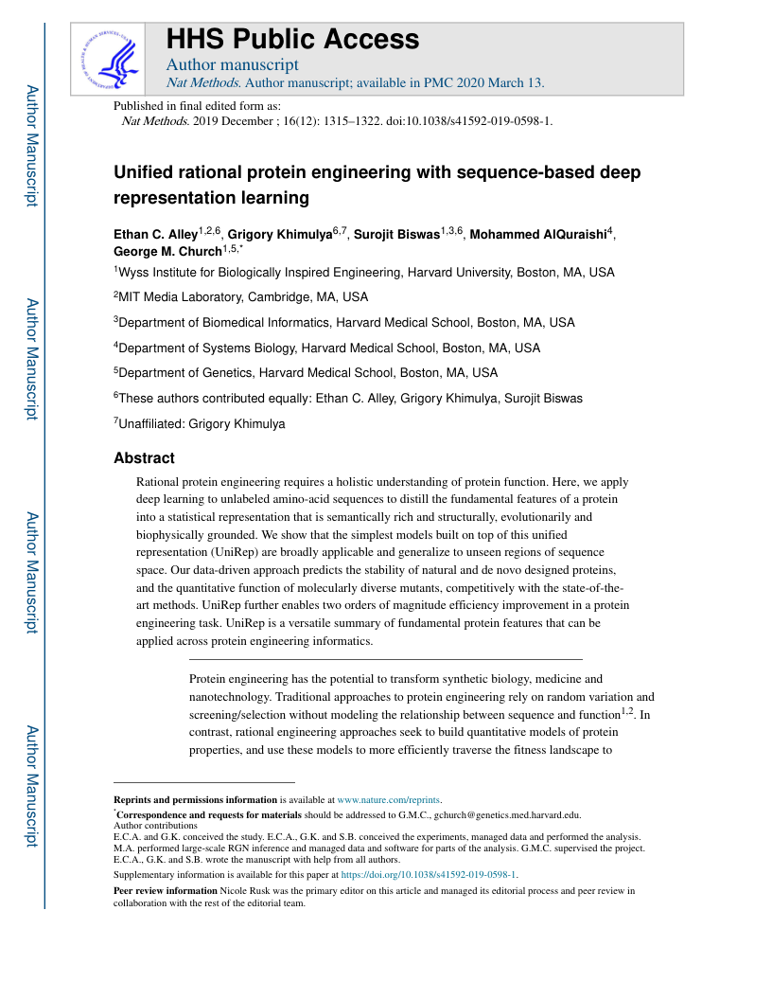
HHS Public Access Author manuscript
Nat Methods. Author manuscript; available in PMC 2020 March 13. Published in final edited form as: Nat Methods. 2019 December ; 16(12): 1315–1322. doi:10.1038/s41592-019-0598-1.
Unified rational protein engineering with sequence-based deep
representation learning
Ethan C. Alley1,2,6, Grigory Khimulya6,7, Surojit Biswas1,3,6, Mohammed AlQuraishi4, George M. Church1,5,* 1Wyss Institute for Biologically Inspired Engineering, Harvard University, Boston, MA, USA
2MIT Media Laboratory, Cambridge, MA, USA 3Department of Biomedical Informatics, Harvard Medical School, Boston, MA, USA
4Department of Systems Biology, Harvard Medical School, Boston, MA, USA 5Department of Genetics, Harvard Medical School, Boston, MA, USA
6These authors contributed equally: Ethan C. Alley, Grigory Khimulya, Surojit Biswas 7Unaffiliated: Grigory Khimulya
Rational protein engineering requires a holistic understanding of protein function. Here, we apply deep learning to unlabeled amino-acid sequences to distill the fundamental features of a protein into a statistical representation that is semantically rich and structurally, evolutionarily and biophysically grounded. We show that the simplest models built on top of this unified representation (UniRep) are broadly applicable and generalize to unseen regions of sequence space. Our data-driven approach predicts the stability of natural and de novo designed proteins, and the quantitative function of molecularly diverse mutants, competitively with the state-of-the-
art methods. UniRep further enables two orders of magnitude efficiency improvement in a protein engineering task. UniRep is a versatile summary of fundamental protein features that can be applied across protein engineering informatics.
Protein engineering has the potential to transform synthetic biology, medicine and nanotechnology. Traditional approaches to protein engineering rely on random variation and screening/selection without modeling the relationship between sequence and function1,2. In contrast, rational engineering approaches seek to build quantitative models of protein properties, and use these models to more efficiently traverse the fitness landscape to
Reprints and permissions information is available at www.nature.com/reprints. *Correspondence and requests for materials should be addressed to G.M.C., gchurch@genetics.med.harvard.edu. Author contributions E.C.A. and G.K. conceived the study. E.C.A., G.K. and S.B. conceived the experiments, managed data and performed the analysis. M.A. performed large-scale RGN inference and managed data and software for parts of the analysis. G.M.C. supervised the project. E.C.A., G.K. and S.B. wrote the manuscript with help from all authors. Supplementary information is available for this paper at https://doi.org/10.1038/s41592-019-0598-1. Peer review information Nicole Rusk was the primary editor on this article and managed its editorial process and peer review in collaboration with the rest of the editorial team. Author Manuscript Author Manuscript Author Manuscript Author Manuscript
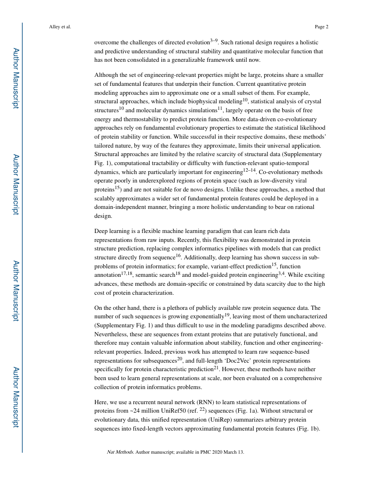
Alley et al. Page 2
overcome the challenges of directed evolution3–9. Such rational design requires a holistic and predictive understanding of structural stability and quantitative molecular function that has not been consolidated in a generalizable framework until now.
Although the set of engineering-relevant properties might be large, proteins share a smaller set of fundamental features that underpin their function. Current quantitative protein modeling approaches aim to approximate one or a small subset of them. For example, structural approaches, which include biophysical modeling10, statistical analysis of crystal structures10 and molecular dynamics simulations11, largely operate on the basis of free energy and thermostability to predict protein function. More data-driven co-evolutionary approaches rely on fundamental evolutionary properties to estimate the statistical likelihood of protein stability or function. While successful in their respective domains, these methods’ tailored nature, by way of the features they approximate, limits their universal application.
Structural approaches are limited by the relative scarcity of structural data (Supplementary Fig. 1), computational tractability or difficulty with function-relevant spatio-temporal dynamics, which are particularly important for engineering12–14. Co-evolutionary methods operate poorly in underexplored regions of protein space (such as low-diversity viral proteins15) and are not suitable for de novo designs. Unlike these approaches, a method that scalably approximates a wider set of fundamental protein features could be deployed in a domain-independent manner, bringing a more holistic understanding to bear on rational design.
Deep learning is a flexible machine learning paradigm that can learn rich data representations from raw inputs. Recently, this flexibility was demonstrated in protein structure prediction, replacing complex informatics pipelines with models that can predict structure directly from sequence16. Additionally, deep learning has shown success in sub- problems of protein informatics; for example, variant-effect prediction15, function annotation17,18, semantic search18 and model-guided protein engineering3,4. While exciting advances, these methods are domain-specific or constrained by data scarcity due to the high cost of protein characterization.
On the other hand, there is a plethora of publicly available raw protein sequence data. The number of such sequences is growing exponentially19, leaving most of them uncharacterized (Supplementary Fig. 1) and thus difficult to use in the modeling paradigms described above.
Nevertheless, these are sequences from extant proteins that are putatively functional, and therefore may contain valuable information about stability, function and other engineering- relevant properties. Indeed, previous work has attempted to learn raw sequence-based representations for subsequences20, and full-length ‘Doc2Vec’ protein representations specifically for protein characteristic prediction21. However, these methods have neither been used to learn general representations at scale, nor been evaluated on a comprehensive collection of protein informatics problems.
Here, we use a recurrent neural network (RNN) to learn statistical representations of proteins from ~24 million UniRef50 (ref. 22) sequences (Fig. 1a). Without structural or evolutionary data, this unified representation (UniRep) summarizes arbitrary protein sequences into fixed-length vectors approximating fundamental protein features (Fig. 1b).
Nat Methods. Author manuscript; available in PMC 2020 March 13. Author Manuscript Author Manuscript Author Manuscript Author Manuscript
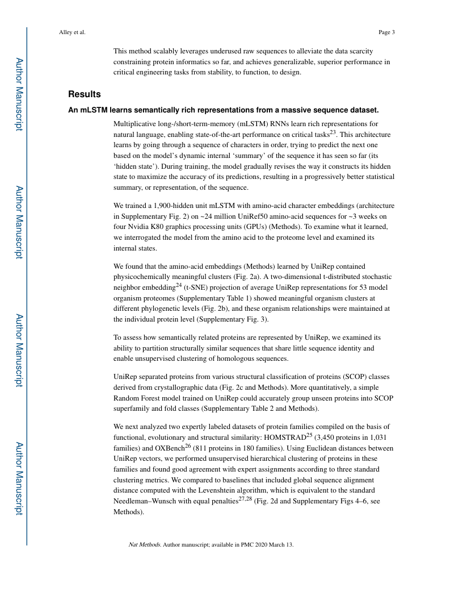
Alley et al. Page 3
This method scalably leverages underused raw sequences to alleviate the data scarcity constraining protein informatics so far, and achieves generalizable, superior performance in critical engineering tasks from stability, to function, to design.
An mLSTM learns semantically rich representations from a massive sequence dataset. Multiplicative long-/short-term-memory (mLSTM) RNNs learn rich representations for natural language, enabling state-of-the-art performance on critical tasks23. This architecture learns by going through a sequence of characters in order, trying to predict the next one based on the model’s dynamic internal ‘summary’ of the sequence it has seen so far (its
‘hidden state’). During training, the model gradually revises the way it constructs its hidden state to maximize the accuracy of its predictions, resulting in a progressively better statistical summary, or representation, of the sequence.
We trained a 1,900-hidden unit mLSTM with amino-acid character embeddings (architecture in Supplementary Fig. 2) on ~24 million UniRef50 amino-acid sequences for ~3 weeks on four Nvidia K80 graphics processing units (GPUs) (Methods). To examine what it learned, we interrogated the model from the amino acid to the proteome level and examined its internal states.
We found that the amino-acid embeddings (Methods) learned by UniRep contained physicochemically meaningful clusters (Fig. 2a). A two-dimensional t-distributed stochastic neighbor embedding24 (t-SNE) projection of average UniRep representations for 53 model organism proteomes (Supplementary Table 1) showed meaningful organism clusters at different phylogenetic levels (Fig. 2b), and these organism relationships were maintained at the individual protein level (Supplementary Fig. 3).
To assess how semantically related proteins are represented by UniRep, we examined its ability to partition structurally similar sequences that share little sequence identity and enable unsupervised clustering of homologous sequences.
UniRep separated proteins from various structural classification of proteins (SCOP) classes derived from crystallographic data (Fig. 2c and Methods). More quantitatively, a simple Random Forest model trained on UniRep could accurately group unseen proteins into SCOP superfamily and fold classes (Supplementary Table 2 and Methods).
We next analyzed two expertly labeled datasets of protein families compiled on the basis of functional, evolutionary and structural similarity: HOMSTRAD25 (3,450 proteins in 1,031 families) and OXBench26 (811 proteins in 180 families). Using Euclidean distances between UniRep vectors, we performed unsupervised hierarchical clustering of proteins in these families and found good agreement with expert assignments according to three standard clustering metrics. We compared to baselines that included global sequence alignment distance computed with the Levenshtein algorithm, which is equivalent to the standard
Needleman–Wunsch with equal penalties27,28 (Fig. 2d and Supplementary Figs 4–6, see Methods).
Nat Methods. Author manuscript; available in PMC 2020 March 13. Author Manuscript Author Manuscript Author Manuscript Author Manuscript
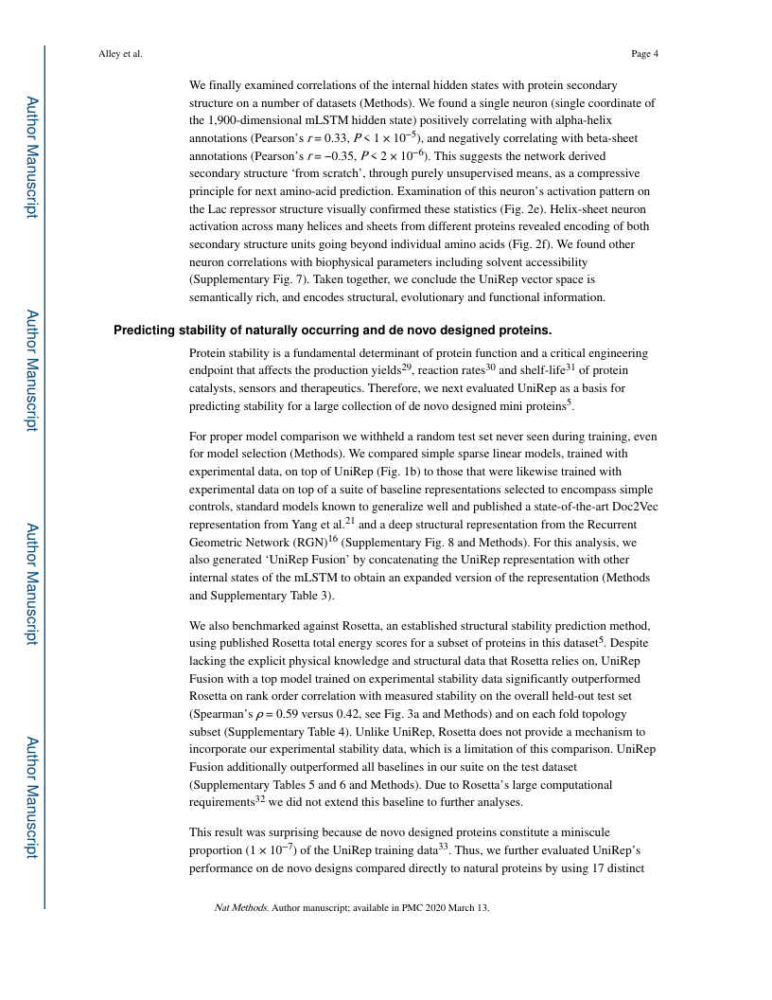
Alley et al. Page 4
We finally examined correlations of the internal hidden states with protein secondary structure on a number of datasets (Methods). We found a single neuron (single coordinate of the 1,900-dimensional mLSTM hidden state) positively correlating with alpha-helix annotations (Pearson’s r = 0.33, P < 1 × 10−5), and negatively correlating with beta-sheet annotations (Pearson’s r = −0.35, P < 2 × 10−6). This suggests the network derived secondary structure ‘from scratch’, through purely unsupervised means, as a compressive principle for next amino-acid prediction. Examination of this neuron’s activation pattern on the Lac repressor structure visually confirmed these statistics (Fig. 2e). Helix-sheet neuron activation across many helices and sheets from different proteins revealed encoding of both
secondary structure units going beyond individual amino acids (Fig. 2f). We found other neuron correlations with biophysical parameters including solvent accessibility (Supplementary Fig. 7). Taken together, we conclude the UniRep vector space is semantically rich, and encodes structural, evolutionary and functional information.
Predicting stability of naturally occurring and de novo designed proteins. Protein stability is a fundamental determinant of protein function and a critical engineering endpoint that affects the production yields29, reaction rates30 and shelf-life31 of protein catalysts, sensors and therapeutics. Therefore, we next evaluated UniRep as a basis for predicting stability for a large collection of de novo designed mini proteins5.
For proper model comparison we withheld a random test set never seen during training, even for model selection (Methods). We compared simple sparse linear models, trained with experimental data, on top of UniRep (Fig. 1b) to those that were likewise trained with experimental data on top of a suite of baseline representations selected to encompass simple
controls, standard models known to generalize well and published a state-of-the-art Doc2Vec representation from Yang et al.21 and a deep structural representation from the Recurrent Geometric Network (RGN)16 (Supplementary Fig. 8 and Methods). For this analysis, we also generated ‘UniRep Fusion’ by concatenating the UniRep representation with other internal states of the mLSTM to obtain an expanded version of the representation (Methods and Supplementary Table 3).
We also benchmarked against Rosetta, an established structural stability prediction method, using published Rosetta total energy scores for a subset of proteins in this dataset5. Despite lacking the explicit physical knowledge and structural data that Rosetta relies on, UniRep Fusion with a top model trained on experimental stability data significantly outperformed Rosetta on rank order correlation with measured stability on the overall held-out test set (Spearman’s ρ = 0.59 versus 0.42, see Fig. 3a and Methods) and on each fold topology subset (Supplementary Table 4). Unlike UniRep, Rosetta does not provide a mechanism to incorporate our experimental stability data, which is a limitation of this comparison. UniRep Fusion additionally outperformed all baselines in our suite on the test dataset (Supplementary Tables 5 and 6 and Methods). Due to Rosetta’s large computational requirements32 we did not extend this baseline to further analyses.
This result was surprising because de novo designed proteins constitute a miniscule proportion (1 × 10−7) of the UniRep training data33. Thus, we further evaluated UniRep’s
performance on de novo designs compared directly to natural proteins by using 17 distinct
Nat Methods. Author manuscript; available in PMC 2020 March 13. Author Manuscript Author Manuscript Author Manuscript Author Manuscript
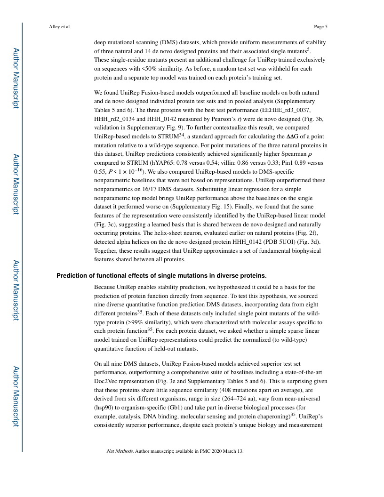
Alley et al. Page 5
deep mutational scanning (DMS) datasets, which provide uniform measurements of stability of three natural and 14 de novo designed proteins and their associated single mutants5. These single-residue mutants present an additional challenge for UniRep trained exclusively on sequences with <50% similarity. As before, a random test set was withheld for each protein and a separate top model was trained on each protein’s training set.
We found UniRep Fusion-based models outperformed all baseline models on both natural and de novo designed individual protein test sets and in pooled analysis (Supplementary Tables 5 and 6). The three proteins with the best test performance (EEHEE_rd3_0037, HHH_rd2_0134 and HHH_0142 measured by Pearson’s r) were de novo designed (Fig. 3b, validation in Supplementary Fig. 9). To further contextualize this result, we compared UniRep-based models to STRUM34, a standard approach for calculating the ΔΔ G of a point mutation relative to a wild-type sequence. For point mutations of the three natural proteins in
this dataset, UniRep predictions consistently achieved significantly higher Spearman ρ compared to STRUM (hYAP65: 0.78 versus 0.54; villin: 0.86 versus 0.33; Pin1 0.89 versus 0.55, P < 1 × 10−16). We also compared UniRep-based models to DMS-specific nonparametric baselines that were not based on representations. UniRep outperformed these nonparametrics on 16/17 DMS datasets. Substituting linear regression for a simple nonparametric top model brings UniRep performance above the baselines on the single dataset it performed worse on (Supplementary Fig. 15). Finally, we found that the same features of the representation were consistently identified by the UniRep-based linear model (Fig. 3c), suggesting a learned basis that is shared between de novo designed and naturally occurring proteins. The helix-sheet neuron, evaluated earlier on natural proteins (Fig. 2f), detected alpha helices on the de novo designed protein HHH_0142 (PDB 5UOI) (Fig. 3d). Together, these results suggest that UniRep approximates a set of fundamental biophysical features shared between all proteins.
Prediction of functional effects of single mutations in diverse proteins.
Because UniRep enables stability prediction, we hypothesized it could be a basis for the prediction of protein function directly from sequence. To test this hypothesis, we sourced nine diverse quantitative function prediction DMS datasets, incorporating data from eight different proteins35. Each of these datasets only included single point mutants of the wild- type protein (>99% similarity), which were characterized with molecular assays specific to each protein function35. For each protein dataset, we asked whether a simple sparse linear model trained on UniRep representations could predict the normalized (to wild-type) quantitative function of held-out mutants.
On all nine DMS datasets, UniRep Fusion-based models achieved superior test set performance, outperforming a comprehensive suite of baselines including a state-of-the-art Doc2Vec representation (Fig. 3e and Supplementary Tables 5 and 6). This is surprising given that these proteins share little sequence similarity (408 mutations apart on average), are
derived from six different organisms, range in size (264–724 aa), vary from near-universal (hsp90) to organism-specific (Gb1) and take part in diverse biological processes (for example, catalysis, DNA binding, molecular sensing and protein chaperoning)35. UniRep’s consistently superior performance, despite each protein’s unique biology and measurement
Nat Methods. Author manuscript; available in PMC 2020 March 13. Author Manuscript Author Manuscript Author Manuscript Author Manuscript
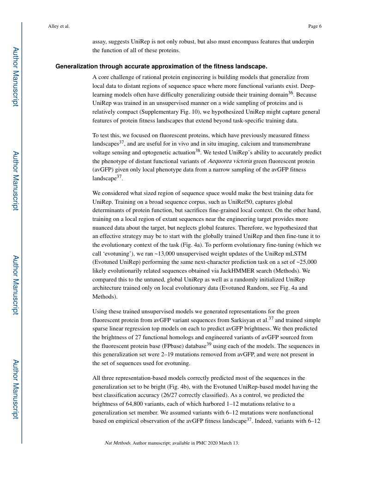
Alley et al. Page 6
assay, suggests UniRep is not only robust, but also must encompass features that underpin the function of all of these proteins.
Generalization through accurate approximation of the fitness landscape. A core challenge of rational protein engineering is building models that generalize from local data to distant regions of sequence space where more functional variants exist. Deep- learning models often have difficulty generalizing outside their training domain36. Because
UniRep was trained in an unsupervised manner on a wide sampling of proteins and is relatively compact (Supplementary Fig. 10), we hypothesized UniRep might capture general features of protein fitness landscapes that extend beyond task-specific training data.
To test this, we focused on fluorescent proteins, which have previously measured fitness landscapes37, and are useful for in vivo and in situ imaging, calcium and transmembrane voltage sensing and optogenetic actuation38. We tested UniRep’s ability to accurately predict the phenotype of distant functional variants of Aequorea victoria green fluorescent protein (avGFP) given only local phenotype data from a narrow sampling of the avGFP fitness landscape37.
We considered what sized region of sequence space would make the best training data for UniRep. Training on a broad sequence corpus, such as UniRef50, captures global determinants of protein function, but sacrifices fine-grained local context. On the other hand, training on a local region of extant sequences near the engineering target provides more nuanced data about the target, but neglects global features. Therefore, we hypothesized that an effective strategy may be to start with the globally trained UniRep and then fine-tune it to the evolutionary context of the task (Fig. 4a). To perform evolutionary fine-tuning (which we call ‘evotuning’), we ran ~13,000 unsupervised weight updates of the UniRep mLSTM (Evotuned UniRep) performing the same next-character prediction task on a set of ~25,000 likely evolutionarily related sequences obtained via JackHMMER search (Methods). We
compared this to the untuned, global UniRep as well as a randomly initialized UniRep architecture trained only on local evolutionary data (Evotuned Random, see Fig. 4a and Methods).
Using these trained unsupervised models we generated representations for the green fluorescent protein from avGFP variant sequences from Sarkisyan et al.37 and trained simple sparse linear regression top models on each to predict avGFP brightness. We then predicted the brightness of 27 functional homologs and engineered variants of avGFP sourced from the fluorescent protein base (FPbase) database39 using each of the models. The sequences in this generalization set were 2–19 mutations removed from avGFP, and were not present in the set of sequences used for evotuning.
All three representation-based models correctly predicted most of the sequences in the generalization set to be bright (Fig. 4b), with the Evotuned UniRep-based model having the best classification accuracy (26/27 correctly classified). As a control, we predicted the brightness of 64,800 variants, each of which harbored 1–12 mutations relative to a generalization set member. We assumed variants with 6–12 mutations were nonfunctional based on empirical observation of the avGFP fitness landscape37. Indeed, variants with 6–12
Nat Methods. Author manuscript; available in PMC 2020 March 13. Author Manuscript Author Manuscript Author Manuscript Author Manuscript
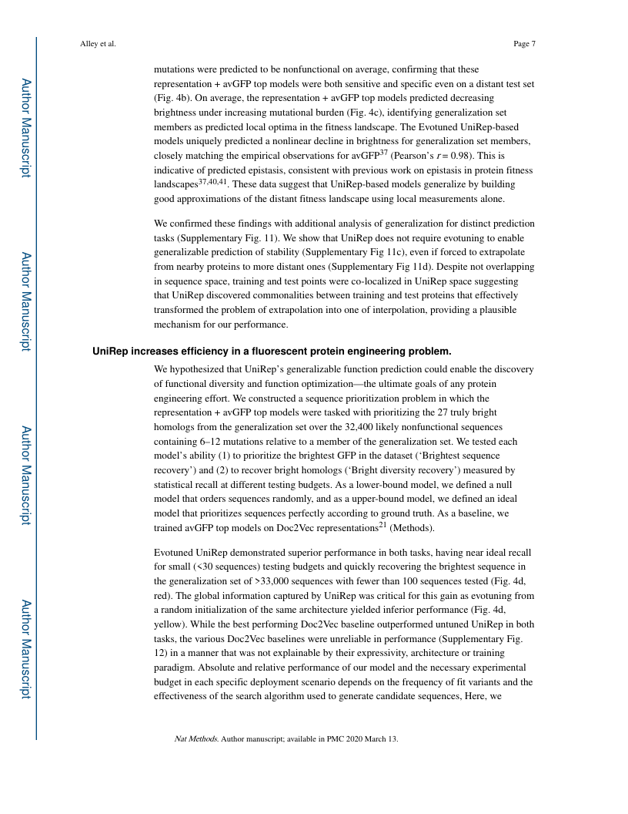
Alley et al. Page 7
mutations were predicted to be nonfunctional on average, confirming that these representation + avGFP top models were both sensitive and specific even on a distant test set (Fig. 4b). On average, the representation + avGFP top models predicted decreasing brightness under increasing mutational burden (Fig. 4c), identifying generalization set members as predicted local optima in the fitness landscape. The Evotuned UniRep-based models uniquely predicted a nonlinear decline in brightness for generalization set members, closely matching the empirical observations for avGFP37 (Pearson’s r = 0.98). This is indicative of predicted epistasis, consistent with previous work on epistasis in protein fitness landscapes37,40,41. These data suggest that UniRep-based models generalize by building
good approximations of the distant fitness landscape using local measurements alone. We confirmed these findings with additional analysis of generalization for distinct prediction tasks (Supplementary Fig. 11). We show that UniRep does not require evotuning to enable
generalizable prediction of stability (Supplementary Fig 11c), even if forced to extrapolate from nearby proteins to more distant ones (Supplementary Fig 11d). Despite not overlapping in sequence space, training and test points were co-localized in UniRep space suggesting that UniRep discovered commonalities between training and test proteins that effectively transformed the problem of extrapolation into one of interpolation, providing a plausible mechanism for our performance.
UniRep increases efficiency in a fluorescent protein engineering problem. We hypothesized that UniRep’s generalizable function prediction could enable the discovery of functional diversity and function optimization—the ultimate goals of any protein engineering effort. We constructed a sequence prioritization problem in which the
representation + avGFP top models were tasked with prioritizing the 27 truly bright homologs from the generalization set over the 32,400 likely nonfunctional sequences containing 6–12 mutations relative to a member of the generalization set. We tested each model’s ability (1) to prioritize the brightest GFP in the dataset (‘Brightest sequence recovery’) and (2) to recover bright homologs (‘Bright diversity recovery’) measured by statistical recall at different testing budgets. As a lower-bound model, we defined a null model that orders sequences randomly, and as a upper-bound model, we defined an ideal model that prioritizes sequences perfectly according to ground truth. As a baseline, we trained avGFP top models on Doc2Vec representations21 (Methods).
Evotuned UniRep demonstrated superior performance in both tasks, having near ideal recall for small (<30 sequences) testing budgets and quickly recovering the brightest sequence in the generalization set of >33,000 sequences with fewer than 100 sequences tested (Fig. 4d, red). The global information captured by UniRep was critical for this gain as evotuning from a random initialization of the same architecture yielded inferior performance (Fig. 4d, yellow). While the best performing Doc2Vec baseline outperformed untuned UniRep in both tasks, the various Doc2Vec baselines were unreliable in performance (Supplementary Fig.
12) in a manner that was not explainable by their expressivity, architecture or training paradigm. Absolute and relative performance of our model and the necessary experimental budget in each specific deployment scenario depends on the frequency of fit variants and the effectiveness of the search algorithm used to generate candidate sequences, Here, we
Nat Methods. Author manuscript; available in PMC 2020 March 13. Author Manuscript Author Manuscript Author Manuscript Author Manuscript
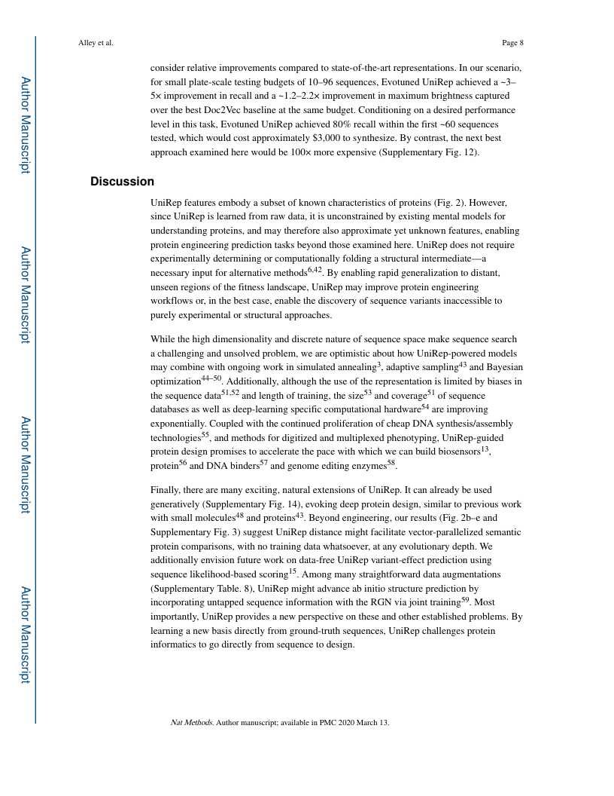
Alley et al. Page 8
consider relative improvements compared to state-of-the-art representations. In our scenario, for small plate-scale testing budgets of 10–96 sequences, Evotuned UniRep achieved a ~3– 5× improvement in recall and a ~1.2–2.2× improvement in maximum brightness captured over the best Doc2Vec baseline at the same budget. Conditioning on a desired performance level in this task, Evotuned UniRep achieved 80% recall within the first ~60 sequences tested, which would cost approximately $3,000 to synthesize. By contrast, the next best approach examined here would be 100× more expensive (Supplementary Fig. 12).
Discussion
UniRep features embody a subset of known characteristics of proteins (Fig. 2). However, since UniRep is learned from raw data, it is unconstrained by existing mental models for understanding proteins, and may therefore also approximate yet unknown features, enabling protein engineering prediction tasks beyond those examined here. UniRep does not require experimentally determining or computationally folding a structural intermediate—a
necessary input for alternative methods6,42. By enabling rapid generalization to distant, unseen regions of the fitness landscape, UniRep may improve protein engineering workflows or, in the best case, enable the discovery of sequence variants inaccessible to purely experimental or structural approaches.
While the high dimensionality and discrete nature of sequence space make sequence search a challenging and unsolved problem, we are optimistic about how UniRep-powered models may combine with ongoing work in simulated annealing3, adaptive sampling43 and Bayesian optimization44–50. Additionally, although the use of the representation is limited by biases in the sequence data51,52 and length of training, the size53 and coverage51 of sequence databases as well as deep-learning specific computational hardware54 are improving exponentially. Coupled with the continued proliferation of cheap DNA synthesis/assembly technologies55, and methods for digitized and multiplexed phenotyping, UniRep-guided protein design promises to accelerate the pace with which we can build biosensors13, protein56 and DNA binders57 and genome editing enzymes58.
Finally, there are many exciting, natural extensions of UniRep. It can already be used generatively (Supplementary Fig. 14), evoking deep protein design, similar to previous work with small molecules48 and proteins43. Beyond engineering, our results (Fig. 2b–e and Supplementary Fig. 3) suggest UniRep distance might facilitate vector-parallelized semantic protein comparisons, with no training data whatsoever, at any evolutionary depth. We
additionally envision future work on data-free UniRep variant-effect prediction using sequence likelihood-based scoring15. Among many straightforward data augmentations (Supplementary Table. 8), UniRep might advance ab initio structure prediction by incorporating untapped sequence information with the RGN via joint training59. Most importantly, UniRep provides a new perspective on these and other established problems. By learning a new basis directly from ground-truth sequences, UniRep challenges protein informatics to go directly from sequence to design.
Nat Methods. Author manuscript; available in PMC 2020 March 13. Author Manuscript Author Manuscript Author Manuscript Author Manuscript
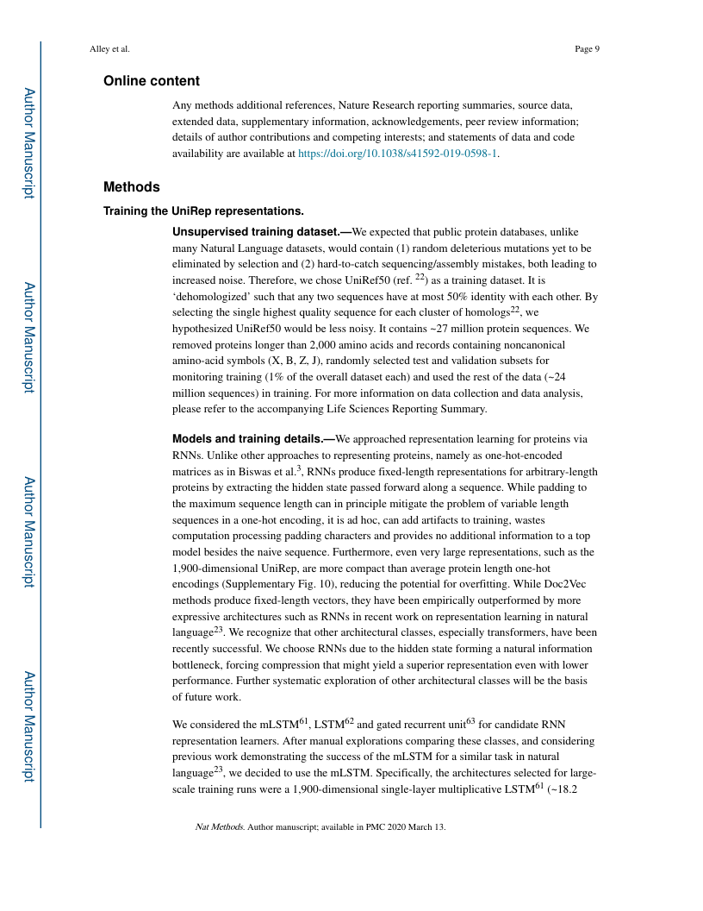
Alley et al. Page 9
Online content
Any methods additional references, Nature Research reporting summaries, source data, extended data, supplementary information, acknowledgements, peer review information; details of author contributions and competing interests; and statements of data and code availability are available at https://doi.org/10.1038/s41592-019-0598-1.
Training the UniRep representations. Unsupervised training dataset.—We expected that public protein databases, unlike many Natural Language datasets, would contain (1) random deleterious mutations yet to be eliminated by selection and (2) hard-to-catch sequencing/assembly mistakes, both leading to increased noise. Therefore, we chose UniRef50 (ref. 22) as a training dataset. It is ‘dehomologized’ such that any two sequences have at most 50% identity with each other. By
selecting the single highest quality sequence for each cluster of homologs22, we hypothesized UniRef50 would be less noisy. It contains ~27 million protein sequences. We removed proteins longer than 2,000 amino acids and records containing noncanonical amino-acid symbols (X, B, Z, J), randomly selected test and validation subsets for monitoring training (1% of the overall dataset each) and used the rest of the data (~24 million sequences) in training. For more information on data collection and data analysis, please refer to the accompanying Life Sciences Reporting Summary.
Models and training details.—We approached representation learning for proteins via RNNs. Unlike other approaches to representing proteins, namely as one-hot-encoded matrices as in Biswas et al.3, RNNs produce fixed-length representations for arbitrary-length proteins by extracting the hidden state passed forward along a sequence. While padding to the maximum sequence length can in principle mitigate the problem of variable length sequences in a one-hot encoding, it is ad hoc, can add artifacts to training, wastes computation processing padding characters and provides no additional information to a top
model besides the naive sequence. Furthermore, even very large representations, such as the 1,900-dimensional UniRep, are more compact than average protein length one-hot encodings (Supplementary Fig. 10), reducing the potential for overfitting. While Doc2Vec methods produce fixed-length vectors, they have been empirically outperformed by more expressive architectures such as RNNs in recent work on representation learning in natural language23. We recognize that other architectural classes, especially transformers, have been recently successful. We choose RNNs due to the hidden state forming a natural information bottleneck, forcing compression that might yield a superior representation even with lower performance. Further systematic exploration of other architectural classes will be the basis of future work.
We considered the mLSTM61, LSTM62 and gated recurrent unit63 for candidate RNN representation learners. After manual explorations comparing these classes, and considering previous work demonstrating the success of the mLSTM for a similar task in natural language23, we decided to use the mLSTM. Specifically, the architectures selected for large- scale training runs were a 1,900-dimensional single-layer multiplicative LSTM61 (~18.2
Nat Methods. Author manuscript; available in PMC 2020 March 13. Author Manuscript Author Manuscript Author Manuscript Author Manuscript
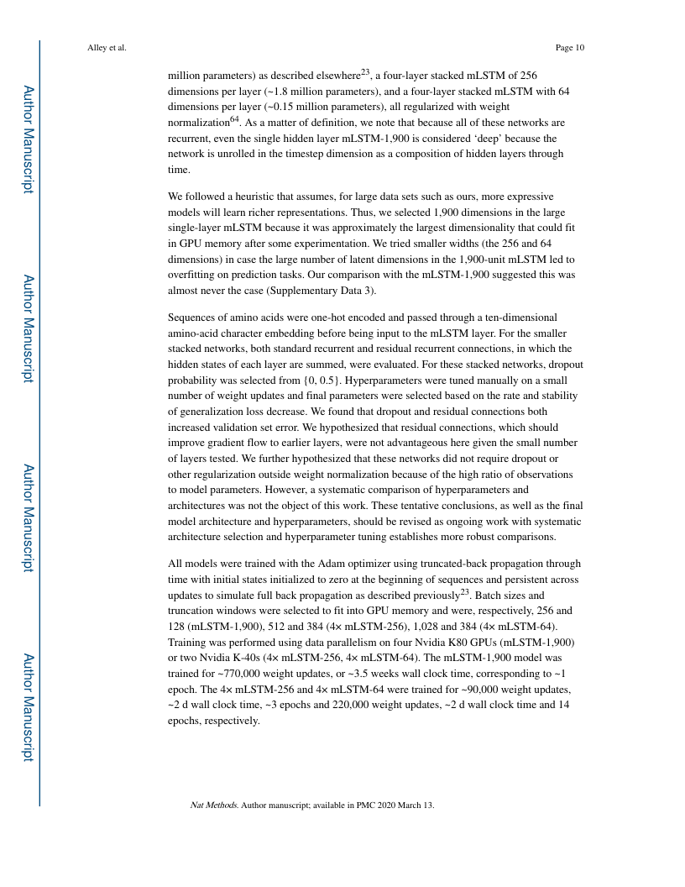
Alley et al. Page 10
million parameters) as described elsewhere23, a four-layer stacked mLSTM of 256 dimensions per layer (~1.8 million parameters), and a four-layer stacked mLSTM with 64 dimensions per layer (~0.15 million parameters), all regularized with weight normalization64. As a matter of definition, we note that because all of these networks are recurrent, even the single hidden layer mLSTM-1,900 is considered ‘deep’ because the network is unrolled in the timestep dimension as a composition of hidden layers through time.
We followed a heuristic that assumes, for large data sets such as ours, more expressive models will learn richer representations. Thus, we selected 1,900 dimensions in the large single-layer mLSTM because it was approximately the largest dimensionality that could fit in GPU memory after some experimentation. We tried smaller widths (the 256 and 64 dimensions) in case the large number of latent dimensions in the 1,900-unit mLSTM led to
overfitting on prediction tasks. Our comparison with the mLSTM-1,900 suggested this was almost never the case (Supplementary Data 3). Sequences of amino acids were one-hot encoded and passed through a ten-dimensional
amino-acid character embedding before being input to the mLSTM layer. For the smaller stacked networks, both standard recurrent and residual recurrent connections, in which the hidden states of each layer are summed, were evaluated. For these stacked networks, dropout probability was selected from {0, 0.5}. Hyperparameters were tuned manually on a small number of weight updates and final parameters were selected based on the rate and stability of generalization loss decrease. We found that dropout and residual connections both increased validation set error. We hypothesized that residual connections, which should improve gradient flow to earlier layers, were not advantageous here given the small number of layers tested. We further hypothesized that these networks did not require dropout or other regularization outside weight normalization because of the high ratio of observations to model parameters. However, a systematic comparison of hyperparameters and architectures was not the object of this work. These tentative conclusions, as well as the final model architecture and hyperparameters, should be revised as ongoing work with systematic
architecture selection and hyperparameter tuning establishes more robust comparisons. All models were trained with the Adam optimizer using truncated-back propagation through time with initial states initialized to zero at the beginning of sequences and persistent across
updates to simulate full back propagation as described previously23. Batch sizes and truncation windows were selected to fit into GPU memory and were, respectively, 256 and 128 (mLSTM-1,900), 512 and 384 (4× mLSTM-256), 1,028 and 384 (4× mLSTM-64). Training was performed using data parallelism on four Nvidia K80 GPUs (mLSTM-1,900) or two Nvidia K-40s (4× mLSTM-256, 4× mLSTM-64). The mLSTM-1,900 model was trained for ~770,000 weight updates, or ~3.5 weeks wall clock time, corresponding to ~1 epoch. The 4× mLSTM-256 and 4× mLSTM-64 were trained for ~90,000 weight updates, ~2 d wall clock time, ~3 epochs and 220,000 weight updates, ~2 d wall clock time and 14 epochs, respectively.
Nat Methods. Author manuscript; available in PMC 2020 March 13. Author Manuscript Author Manuscript Author Manuscript Author Manuscript
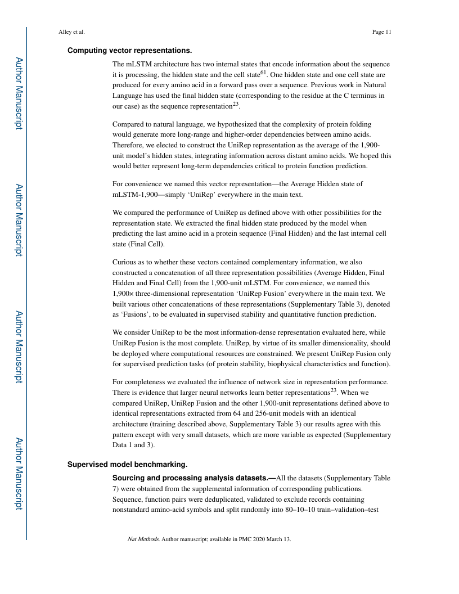
Alley et al. Page 11
Computing vector representations. The mLSTM architecture has two internal states that encode information about the sequence it is processing, the hidden state and the cell state61. One hidden state and one cell state are produced for every amino acid in a forward pass over a sequence. Previous work in Natural Language has used the final hidden state (corresponding to the residue at the C terminus in
our case) as the sequence representation23. Compared to natural language, we hypothesized that the complexity of protein folding would generate more long-range and higher-order dependencies between amino acids.
Therefore, we elected to construct the UniRep representation as the average of the 1,900- unit model’s hidden states, integrating information across distant amino acids. We hoped this would better represent long-term dependencies critical to protein function prediction.
For convenience we named this vector representation—the Average Hidden state of mLSTM-1,900—simply ‘UniRep’ everywhere in the main text. We compared the performance of UniRep as defined above with other possibilities for the
representation state. We extracted the final hidden state produced by the model when predicting the last amino acid in a protein sequence (Final Hidden) and the last internal cell state (Final Cell).
Curious as to whether these vectors contained complementary information, we also constructed a concatenation of all three representation possibilities (Average Hidden, Final Hidden and Final Cell) from the 1,900-unit mLSTM. For convenience, we named this 1,900× three-dimensional representation ‘UniRep Fusion’ everywhere in the main text. We built various other concatenations of these representations (Supplementary Table 3), denoted as ‘Fusions’, to be evaluated in supervised stability and quantitative function prediction.
We consider UniRep to be the most information-dense representation evaluated here, while UniRep Fusion is the most complete. UniRep, by virtue of its smaller dimensionality, should be deployed where computational resources are constrained. We present UniRep Fusion only for supervised prediction tasks (of protein stability, biophysical characteristics and function).
For completeness we evaluated the influence of network size in representation performance. There is evidence that larger neural networks learn better representations23. When we compared UniRep, UniRep Fusion and the other 1,900-unit representations defined above to identical representations extracted from 64 and 256-unit models with an identical architecture (training described above, Supplementary Table 3) our results agree with this pattern except with very small datasets, which are more variable as expected (Supplementary Data 1 and 3).
Supervised model benchmarking.
Sourcing and processing analysis datasets.—All the datasets (Supplementary Table 7) were obtained from the supplemental information of corresponding publications. Sequence, function pairs were deduplicated, validated to exclude records containing nonstandard amino-acid symbols and split randomly into 80–10–10 train–validation–test
Nat Methods. Author manuscript; available in PMC 2020 March 13. Author Manuscript Author Manuscript Author Manuscript Author Manuscript
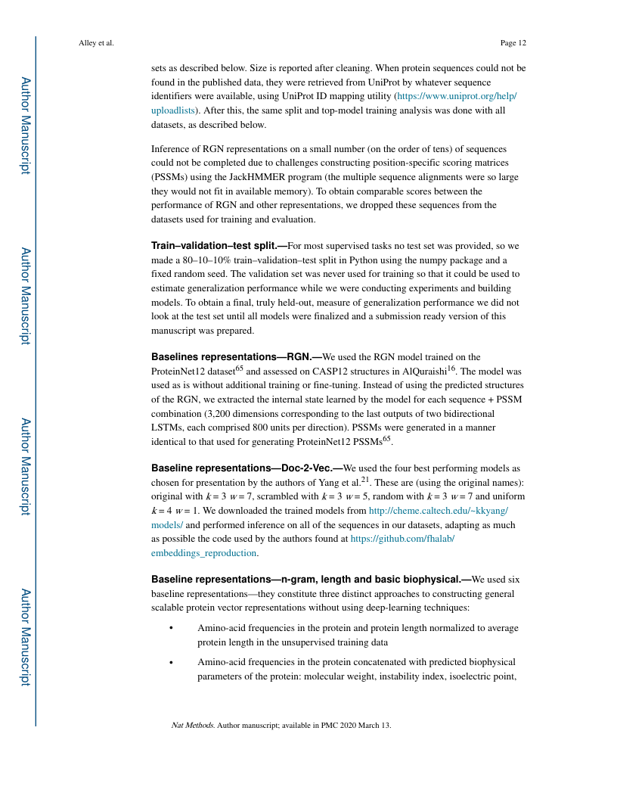
Alley et al. Page 12
sets as described below. Size is reported after cleaning. When protein sequences could not be found in the published data, they were retrieved from UniProt by whatever sequence identifiers were available, using UniProt ID mapping utility (https://www.uniprot.org/help/ uploadlists). After this, the same split and top-model training analysis was done with all datasets, as described below.
Inference of RGN representations on a small number (on the order of tens) of sequences could not be completed due to challenges constructing position-specific scoring matrices (PSSMs) using the JackHMMER program (the multiple sequence alignments were so large they would not fit in available memory). To obtain comparable scores between the performance of RGN and other representations, we dropped these sequences from the datasets used for training and evaluation.
Train–validation–test split.—For most supervised tasks no test set was provided, so we made a 80–10–10% train–validation–test split in Python using the numpy package and a
fixed random seed. The validation set was never used for training so that it could be used to estimate generalization performance while we were conducting experiments and building models. To obtain a final, truly held-out, measure of generalization performance we did not look at the test set until all models were finalized and a submission ready version of this manuscript was prepared.
Baselines representations—RGN.—We used the RGN model trained on the ProteinNet12 dataset65 and assessed on CASP12 structures in AlQuraishi16. The model was used as is without additional training or fine-tuning. Instead of using the predicted structures of the RGN, we extracted the internal state learned by the model for each sequence + PSSM combination (3,200 dimensions corresponding to the last outputs of two bidirectional LSTMs, each comprised 800 units per direction). PSSMs were generated in a manner identical to that used for generating ProteinNet12 PSSMs65.
Baseline representations—Doc-2-Vec.—We used the four best performing models as chosen for presentation by the authors of Yang et al.21. These are (using the original names): original with k = 3 w = 7, scrambled with k = 3 w = 5, random with k = 3 w = 7 and uniform
k = 4 w = 1. We downloaded the trained models from http://cheme.caltech.edu/~kkyang/ models/ and performed inference on all of the sequences in our datasets, adapting as much as possible the code used by the authors found at https://github.com/fhalab/ embeddings_reproduction.
Baseline representations—n-gram, length and basic biophysical.—We used six baseline representations—they constitute three distinct approaches to constructing general scalable protein vector representations without using deep-learning techniques:
• Amino-acid frequencies in the protein and protein length normalized to average protein length in the unsupervised training data • Amino-acid frequencies in the protein concatenated with predicted biophysical parameters of the protein: molecular weight, instability index, isoelectric point,
Nat Methods. Author manuscript; available in PMC 2020 March 13. Author Manuscript Author Manuscript Author Manuscript Author Manuscript
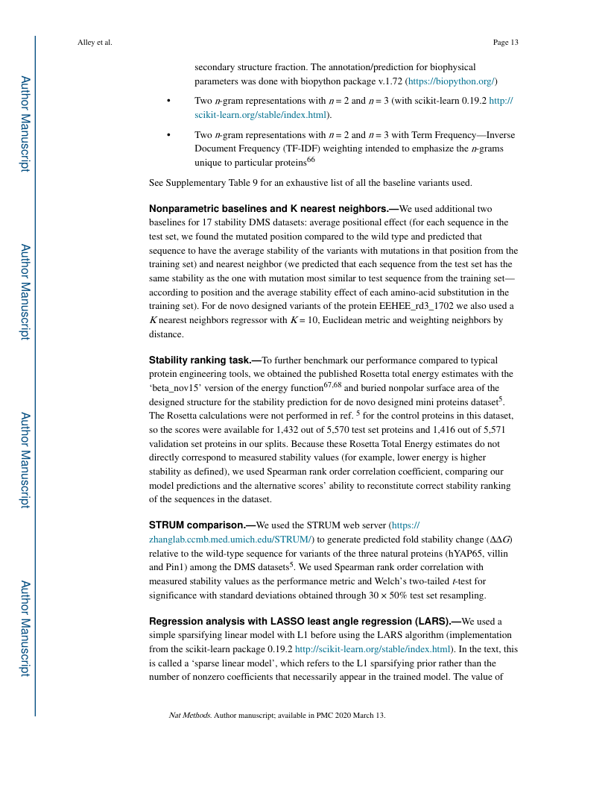
Alley et al. Page 13
secondary structure fraction. The annotation/prediction for biophysical parameters was done with biopython package v.1.72 (https://biopython.org/) • Two n-gram representations with n = 2 and n = 3 (with scikit-learn 0.19.2 http://
scikit-learn.org/stable/index.html). • Two n-gram representations with n = 2 and n = 3 with Term Frequency—Inverse Document Frequency (TF-IDF) weighting intended to emphasize the n-grams unique to particular proteins66
See Supplementary Table 9 for an exhaustive list of all the baseline variants used.
Nonparametric baselines and K nearest neighbors.—We used additional two baselines for 17 stability DMS datasets: average positional effect (for each sequence in the test set, we found the mutated position compared to the wild type and predicted that sequence to have the average stability of the variants with mutations in that position from the training set) and nearest neighbor (we predicted that each sequence from the test set has the same stability as the one with mutation most similar to test sequence from the training set— according to position and the average stability effect of each amino-acid substitution in the training set). For de novo designed variants of the protein EEHEE_rd3_1702 we also used a K nearest neighbors regressor with K = 10, Euclidean metric and weighting neighbors by distance.
Stability ranking task.—To further benchmark our performance compared to typical
protein engineering tools, we obtained the published Rosetta total energy estimates with the ‘beta_nov15’ version of the energy function67,68 and buried nonpolar surface area of the designed structure for the stability prediction for de novo designed mini proteins dataset5. The Rosetta calculations were not performed in ref. 5 for the control proteins in this dataset, so the scores were available for 1,432 out of 5,570 test set proteins and 1,416 out of 5,571 validation set proteins in our splits. Because these Rosetta Total Energy estimates do not directly correspond to measured stability values (for example, lower energy is higher stability as defined), we used Spearman rank order correlation coefficient, comparing our model predictions and the alternative scores’ ability to reconstitute correct stability ranking of the sequences in the dataset.
STRUM comparison.—We used the STRUM web server (https:// zhanglab.ccmb.med.umich.edu/STRUM/) to generate predicted fold stability change (ΔΔ G) relative to the wild-type sequence for variants of the three natural proteins (hYAP65, villin and Pin1) among the DMS datasets5. We used Spearman rank order correlation with
measured stability values as the performance metric and Welch’s two-tailed t-test for significance with standard deviations obtained through 30 × 50% test set resampling.
Regression analysis with LASSO least angle regression (LARS).—We used a simple sparsifying linear model with L1 before using the LARS algorithm (implementation from the scikit-learn package 0.19.2 http://scikit-learn.org/stable/index.html). In the text, this is called a ‘sparse linear model’, which refers to the L1 sparsifying prior rather than the number of nonzero coefficients that necessarily appear in the trained model. The value of
Nat Methods. Author manuscript; available in PMC 2020 March 13. Author Manuscript Author Manuscript Author Manuscript Author Manuscript
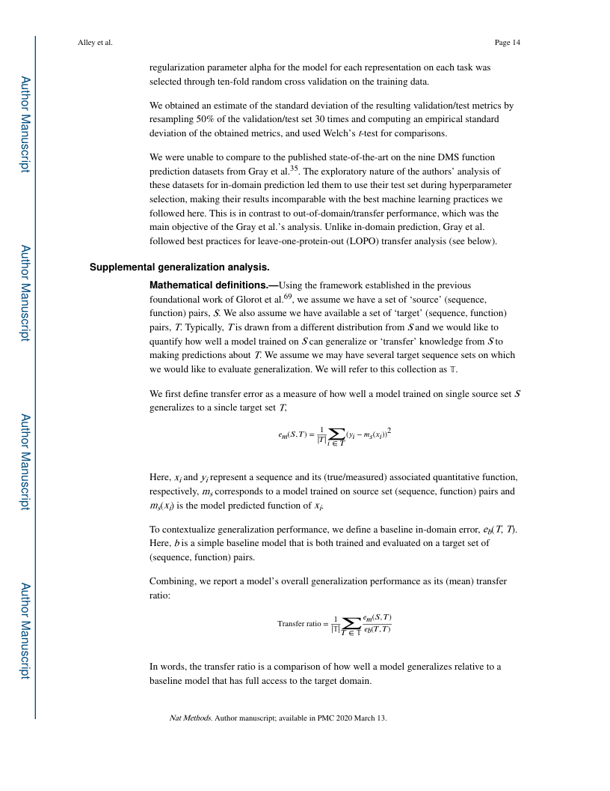
Alley et al. Page 14
regularization parameter alpha for the model for each representation on each task was selected through ten-fold random cross validation on the training data.
We obtained an estimate of the standard deviation of the resulting validation/test metrics by resampling 50% of the validation/test set 30 times and computing an empirical standard deviation of the obtained metrics, and used Welch’s t-test for comparisons.
We were unable to compare to the published state-of-the-art on the nine DMS function prediction datasets from Gray et al.35. The exploratory nature of the authors’ analysis of these datasets for in-domain prediction led them to use their test set during hyperparameter selection, making their results incomparable with the best machine learning practices we followed here. This is in contrast to out-of-domain/transfer performance, which was the main objective of the Gray et al.’s analysis. Unlike in-domain prediction, Gray et al. followed best practices for leave-one-protein-out (LOPO) transfer analysis (see below).
Supplemental generalization analysis.
Mathematical definitions.—Using the framework established in the previous foundational work of Glorot et al.69, we assume we have a set of ‘source’ (sequence, function) pairs, S. We also assume we have available a set of ‘target’ (sequence, function) pairs, T. Typically, T is drawn from a different distribution from S and we would like to quantify how well a model trained on S can generalize or ‘transfer’ knowledge from S to making predictions about T. We assume we may have several target sequence sets on which we would like to evaluate generalization. We will refer to this collection as . T We first define transfer error as a measure of how well a model trained on single source set S generalizes to a sincle target set T,
1 2 em(S,T)= T (yi−ms(xi)) i∈T Here, x and y represent a sequence and its (true/measured) associated quantitative function, i i respectively, m corresponds to a model trained on source set (sequence, function) pairs and s m(x) is the model predicted function of x. s i i To contextualize generalization performance, we define a baseline in-domain error, e(T, T). b Here, b is a simple baseline model that is both trained and evaluated on a target set of (sequence, function) pairs. Combining, we report a model’s overall generalization performance as its (mean) transfer ratio: 1 em(S,T) Transfer ratio= T T ∈T eb(T,T) In words, the transfer ratio is a comparison of how well a model generalizes relative to a baseline model that has full access to the target domain. Nat Methods. Author manuscript; available in PMC 2020 March 13. Author Manuscript Author Manuscript Author Manuscript Author Manuscript
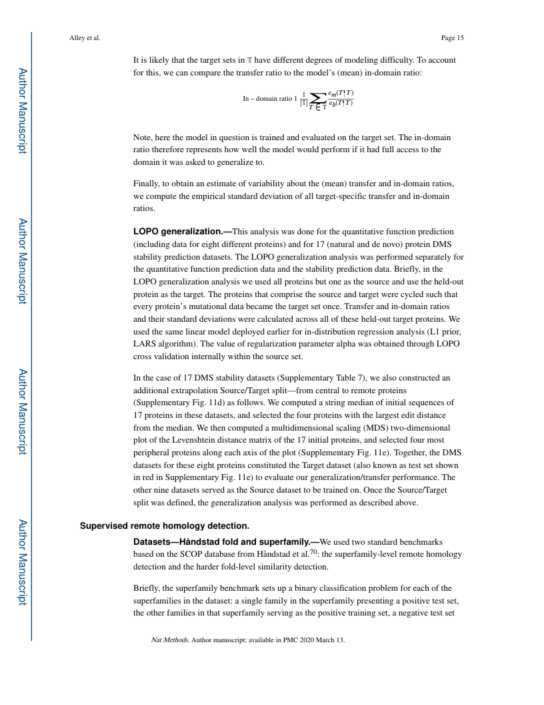
Alley et al. Page 15
It is likely that the target sets in have different degrees of modeling difficulty. To account T for this, we can compare the transfer ratio to the model’s (mean) in-domain ratio: 1 em(T T) In – domain ratio1 T T T eb(T T) Note, here the model in question is trained and evaluated on the target set. The in-domain ratio therefore represents how well the model would perform if it had full access to the domain it was asked to generalize to. Finally, to obtain an estimate of variability about the (mean) transfer and in-domain ratios, we compute the empirical standard deviation of all target-specific transfer and in-domain ratios.
LOPO generalization.—This analysis was done for the quantitative function prediction (including data for eight different proteins) and for 17 (natural and de novo) protein DMS stability prediction datasets. The LOPO generalization analysis was performed separately for the quantitative function prediction data and the stability prediction data. Briefly, in the LOPO generalization analysis we used all proteins but one as the source and use the held-out protein as the target. The proteins that comprise the source and target were cycled such that every protein’s mutational data became the target set once. Transfer and in-domain ratios and their standard deviations were calculated across all of these held-out target proteins. We used the same linear model deployed earlier for in-distribution regression analysis (L1 prior, LARS algorithm). The value of regularization parameter alpha was obtained through LOPO cross validation internally within the source set.
In the case of 17 DMS stability datasets (Supplementary Table 7), we also constructed an additional extrapolation Source/Target split—from central to remote proteins (Supplementary Fig. 11d) as follows. We computed a string median of initial sequences of
17 proteins in these datasets, and selected the four proteins with the largest edit distance from the median. We then computed a multidimensional scaling (MDS) two-dimensional plot of the Levenshtein distance matrix of the 17 initial proteins, and selected four most peripheral proteins along each axis of the plot (Supplementary Fig. 11e). Together, the DMS datasets for these eight proteins constituted the Target dataset (also known as test set shown in red in Supplementary Fig. 11e) to evaluate our generalization/transfer performance. The other nine datasets served as the Source dataset to be trained on. Once the Source/Target split was defined, the generalization analysis was performed as described above.
Supervised remote homology detection. Datasets—Håndstad fold and superfamily.—We used two standard benchmarks
based on the SCOP database from Håndstad et al.70: the superfamily-level remote homology detection and the harder fold-level similarity detection. Briefly, the superfamily benchmark sets up a binary classification problem for each of the
superfamilies in the dataset: a single family in the superfamily presenting a positive test set, the other families in that superfamily serving as the positive training set, a negative test set
Nat Methods. Author manuscript; available in PMC 2020 March 13. Author Manuscript Author Manuscript Author Manuscript Author Manuscript
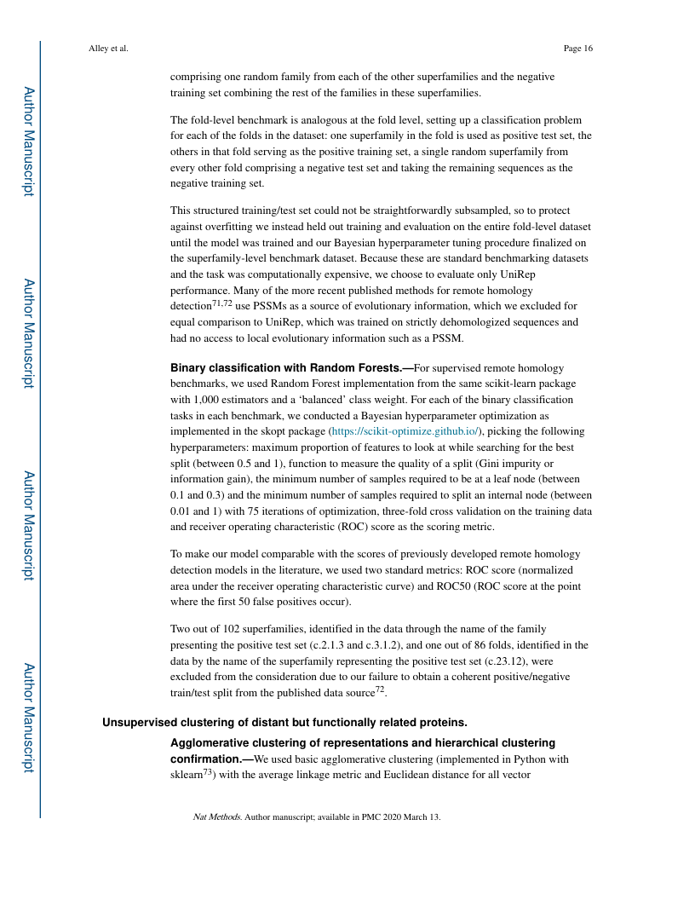
Alley et al. Page 16
comprising one random family from each of the other superfamilies and the negative training set combining the rest of the families in these superfamilies.
The fold-level benchmark is analogous at the fold level, setting up a classification problem for each of the folds in the dataset: one superfamily in the fold is used as positive test set, the others in that fold serving as the positive training set, a single random superfamily from every other fold comprising a negative test set and taking the remaining sequences as the negative training set.
This structured training/test set could not be straightforwardly subsampled, so to protect against overfitting we instead held out training and evaluation on the entire fold-level dataset until the model was trained and our Bayesian hyperparameter tuning procedure finalized on the superfamily-level benchmark dataset. Because these are standard benchmarking datasets and the task was computationally expensive, we choose to evaluate only UniRep performance. Many of the more recent published methods for remote homology detection71,72 use PSSMs as a source of evolutionary information, which we excluded for equal comparison to UniRep, which was trained on strictly dehomologized sequences and
had no access to local evolutionary information such as a PSSM.
Binary classification with Random Forests.—For supervised remote homology benchmarks, we used Random Forest implementation from the same scikit-learn package with 1,000 estimators and a ‘balanced’ class weight. For each of the binary classification tasks in each benchmark, we conducted a Bayesian hyperparameter optimization as implemented in the skopt package (https://scikit-optimize.github.io/), picking the following hyperparameters: maximum proportion of features to look at while searching for the best split (between 0.5 and 1), function to measure the quality of a split (Gini impurity or information gain), the minimum number of samples required to be at a leaf node (between 0.1 and 0.3) and the minimum number of samples required to split an internal node (between 0.01 and 1) with 75 iterations of optimization, three-fold cross validation on the training data and receiver operating characteristic (ROC) score as the scoring metric.
To make our model comparable with the scores of previously developed remote homology detection models in the literature, we used two standard metrics: ROC score (normalized area under the receiver operating characteristic curve) and ROC50 (ROC score at the point where the first 50 false positives occur).
Two out of 102 superfamilies, identified in the data through the name of the family presenting the positive test set (c.2.1.3 and c.3.1.2), and one out of 86 folds, identified in the data by the name of the superfamily representing the positive test set (c.23.12), were excluded from the consideration due to our failure to obtain a coherent positive/negative
train/test split from the published data source72.
Unsupervised clustering of distant but functionally related proteins. Agglomerative clustering of representations and hierarchical clustering confirmation.—We used basic agglomerative clustering (implemented in Python with sklearn73) with the average linkage metric and Euclidean distance for all vector
Nat Methods. Author manuscript; available in PMC 2020 March 13. Author Manuscript Author Manuscript Author Manuscript Author Manuscript
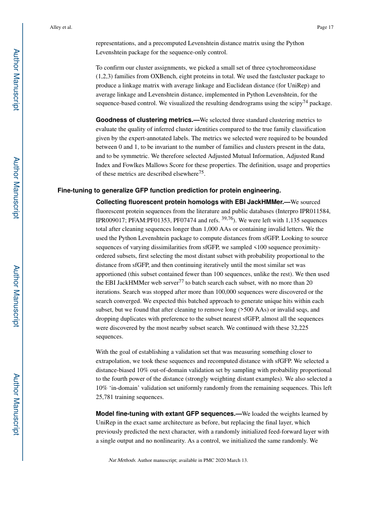
Alley et al. Page 17
representations, and a precomputed Levenshtein distance matrix using the Python Levenshtein package for the sequence-only control.
To confirm our cluster assignments, we picked a small set of three cytochromeoxidase (1,2,3) families from OXBench, eight proteins in total. We used the fastcluster package to produce a linkage matrix with average linkage and Euclidean distance (for UniRep) and average linkage and Levenshtein distance, implemented in Python Levenshtein, for the sequence-based control. We visualized the resulting dendrograms using the scipy74 package.
Goodness of clustering metrics.—We selected three standard clustering metrics to evaluate the quality of inferred cluster identities compared to the true family classification given by the expert-annotated labels. The metrics we selected were required to be bounded between 0 and 1, to be invariant to the number of families and clusters present in the data, and to be symmetric. We therefore selected Adjusted Mutual Information, Adjusted Rand Index and Fowlkes Mallows Score for these properties. The definition, usage and properties
of these metrics are described elsewhere75.
Fine-tuning to generalize GFP function prediction for protein engineering. Collecting fluorescent protein homologs with EBI JackHMMer.—We sourced fluorescent protein sequences from the literature and public databases (Interpro IPR011584, IPR009017; PFAM:PF01353, PF07474 and refs. 39,76). We were left with 1,135 sequences total after cleaning sequences longer than 1,000 AAs or containing invalid letters. We the used the Python Levenshtein package to compute distances from sfGFP. Looking to source sequences of varying dissimilarities from sfGFP, we sampled <100 sequence proximity- ordered subsets, first selecting the most distant subset with probability proportional to the distance from sfGFP, and then continuing iteratively until the most similar set was
apportioned (this subset contained fewer than 100 sequences, unlike the rest). We then used the EBI JackHMMer web server77 to batch search each subset, with no more than 20 iterations. Search was stopped after more than 100,000 sequences were discovered or the search converged. We expected this batched approach to generate unique hits within each subset, but we found that after cleaning to remove long (>500 AAs) or invalid seqs, and dropping duplicates with preference to the subset nearest sfGFP, almost all the sequences were discovered by the most nearby subset search. We continued with these 32,225 sequences.
With the goal of establishing a validation set that was measuring something closer to extrapolation, we took these sequences and recomputed distance with sfGFP. We selected a distance-biased 10% out-of-domain validation set by sampling with probability proportional to the fourth power of the distance (strongly weighting distant examples). We also selected a 10% ‘in-domain’ validation set uniformly randomly from the remaining sequences. This left 25,781 training sequences.
Model fine-tuning with extant GFP sequences.—We loaded the weights learned by UniRep in the exact same architecture as before, but replacing the final layer, which previously predicted the next character, with a randomly initialized feed-forward layer with
a single output and no nonlinearity. As a control, we initialized the same randomly. We
Nat Methods. Author manuscript; available in PMC 2020 March 13. Author Manuscript Author Manuscript Author Manuscript Author Manuscript
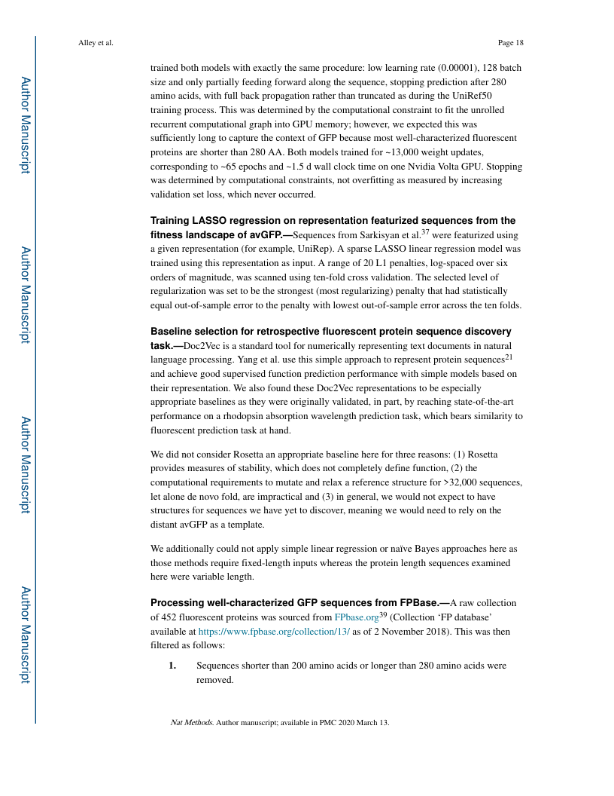
Alley et al. Page 18
trained both models with exactly the same procedure: low learning rate (0.00001), 128 batch size and only partially feeding forward along the sequence, stopping prediction after 280 amino acids, with full back propagation rather than truncated as during the UniRef50 training process. This was determined by the computational constraint to fit the unrolled recurrent computational graph into GPU memory; however, we expected this was sufficiently long to capture the context of GFP because most well-characterized fluorescent proteins are shorter than 280 AA. Both models trained for ~13,000 weight updates, corresponding to ~65 epochs and ~1.5 d wall clock time on one Nvidia Volta GPU. Stopping was determined by computational constraints, not overfitting as measured by increasing
validation set loss, which never occurred.
Training LASSO regression on representation featurized sequences from the fitness landscape of avGFP.—Sequences from Sarkisyan et al.37 were featurized using a given representation (for example, UniRep). A sparse LASSO linear regression model was trained using this representation as input. A range of 20 L1 penalties, log-spaced over six orders of magnitude, was scanned using ten-fold cross validation. The selected level of regularization was set to be the strongest (most regularizing) penalty that had statistically equal out-of-sample error to the penalty with lowest out-of-sample error across the ten folds.
Baseline selection for retrospective fluorescent protein sequence discovery task.—Doc2Vec is a standard tool for numerically representing text documents in natural language processing. Yang et al. use this simple approach to represent protein sequences21 and achieve good supervised function prediction performance with simple models based on their representation. We also found these Doc2Vec representations to be especially appropriate baselines as they were originally validated, in part, by reaching state-of-the-art performance on a rhodopsin absorption wavelength prediction task, which bears similarity to
fluorescent prediction task at hand. We did not consider Rosetta an appropriate baseline here for three reasons: (1) Rosetta provides measures of stability, which does not completely define function, (2) the
computational requirements to mutate and relax a reference structure for >32,000 sequences, let alone de novo fold, are impractical and (3) in general, we would not expect to have structures for sequences we have yet to discover, meaning we would need to rely on the distant avGFP as a template.
We additionally could not apply simple linear regression or naïve Bayes approaches here as those methods require fixed-length inputs whereas the protein length sequences examined here were variable length.
Processing well-characterized GFP sequences from FPBase.—A raw collection of 452 fluorescent proteins was sourced from FPbase.org39 (Collection ‘FP database’ available at https://www.fpbase.org/collection/13/ as of 2 November 2018). This was then filtered as follows:
1. Sequences shorter than 200 amino acids or longer than 280 amino acids were removed.
Nat Methods. Author manuscript; available in PMC 2020 March 13. Author Manuscript Author Manuscript Author Manuscript Author Manuscript
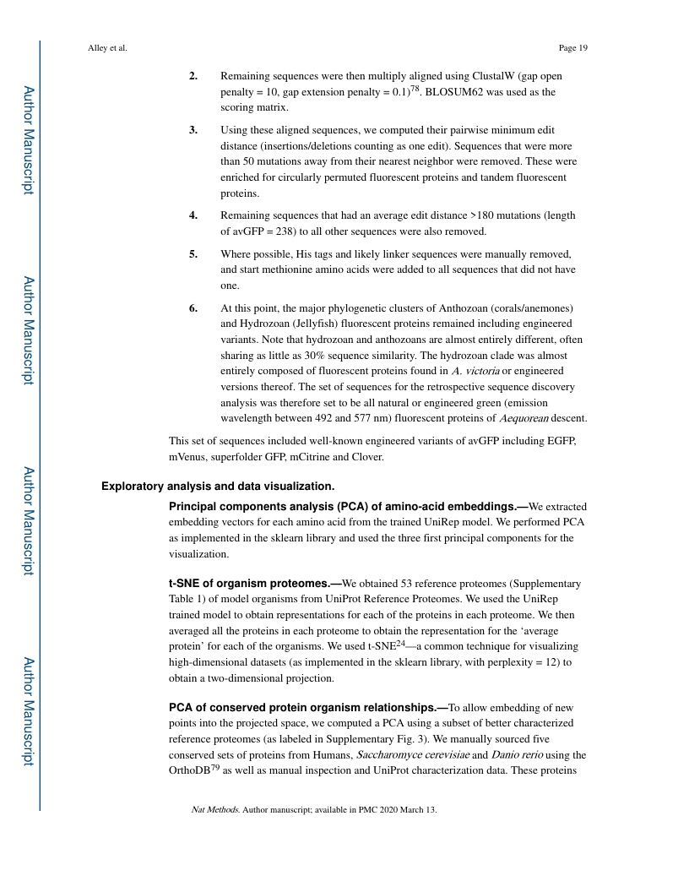
Alley et al. Page 19
2. Remaining sequences were then multiply aligned using ClustalW (gap open penalty = 10, gap extension penalty = 0.1)78. BLOSUM62 was used as the scoring matrix.
3. Using these aligned sequences, we computed their pairwise minimum edit distance (insertions/deletions counting as one edit). Sequences that were more than 50 mutations away from their nearest neighbor were removed. These were enriched for circularly permuted fluorescent proteins and tandem fluorescent proteins. 4. Remaining sequences that had an average edit distance >180 mutations (length of avGFP = 238) to all other sequences were also removed.
5. Where possible, His tags and likely linker sequences were manually removed, and start methionine amino acids were added to all sequences that did not have one.
6. At this point, the major phylogenetic clusters of Anthozoan (corals/anemones) and Hydrozoan (Jellyfish) fluorescent proteins remained including engineered variants. Note that hydrozoan and anthozoans are almost entirely different, often sharing as little as 30% sequence similarity. The hydrozoan clade was almost entirely composed of fluorescent proteins found in A. victoria or engineered versions thereof. The set of sequences for the retrospective sequence discovery analysis was therefore set to be all natural or engineered green (emission wavelength between 492 and 577 nm) fluorescent proteins of Aequorean descent.
This set of sequences included well-known engineered variants of avGFP including EGFP, mVenus, superfolder GFP, mCitrine and Clover.
Exploratory analysis and data visualization. Principal components analysis (PCA) of amino-acid embeddings.—We extracted embedding vectors for each amino acid from the trained UniRep model. We performed PCA as implemented in the sklearn library and used the three first principal components for the visualization.
t-SNE of organism proteomes.—We obtained 53 reference proteomes (Supplementary
Table 1) of model organisms from UniProt Reference Proteomes. We used the UniRep trained model to obtain representations for each of the proteins in each proteome. We then averaged all the proteins in each proteome to obtain the representation for the ‘average protein’ for each of the organisms. We used t-SNE24—a common technique for visualizing high-dimensional datasets (as implemented in the sklearn library, with perplexity = 12) to obtain a two-dimensional projection.
PCA of conserved protein organism relationships.—To allow embedding of new points into the projected space, we computed a PCA using a subset of better characterized reference proteomes (as labeled in Supplementary Fig. 3). We manually sourced five conserved sets of proteins from Humans, Saccharomyce cerevisiae and Danio rerio using the OrthoDB79 as well as manual inspection and UniProt characterization data. These proteins
Nat Methods. Author manuscript; available in PMC 2020 March 13. Author Manuscript Author Manuscript Author Manuscript Author Manuscript
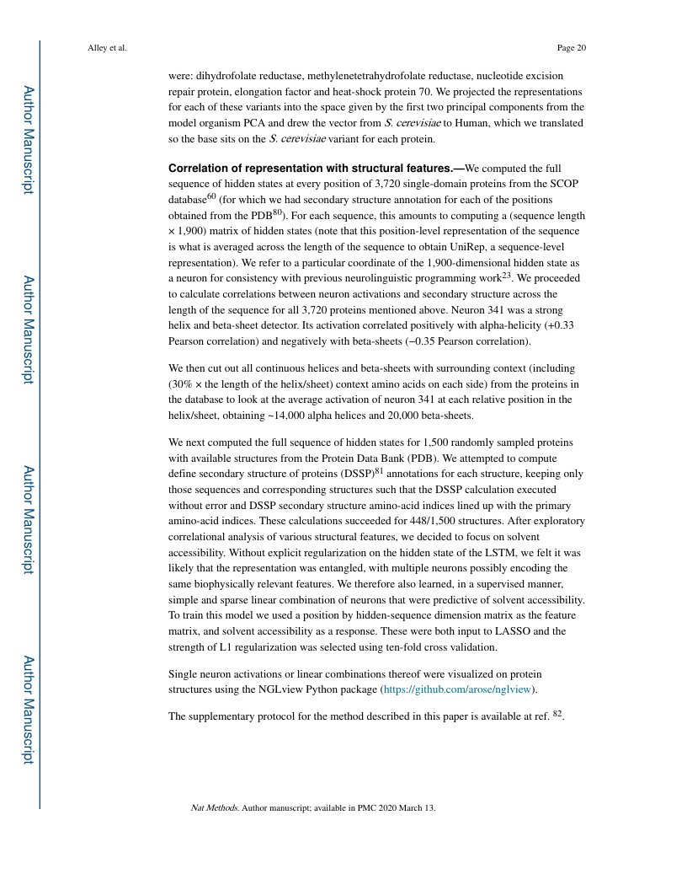
Alley et al. Page 20
were: dihydrofolate reductase, methylenetetrahydrofolate reductase, nucleotide excision repair protein, elongation factor and heat-shock protein 70. We projected the representations for each of these variants into the space given by the first two principal components from the model organism PCA and drew the vector from S. cerevisiae to Human, which we translated so the base sits on the S. cerevisiae variant for each protein.
Correlation of representation with structural features.—We computed the full sequence of hidden states at every position of 3,720 single-domain proteins from the SCOP database60 (for which we had secondary structure annotation for each of the positions obtained from the PDB80). For each sequence, this amounts to computing a (sequence length × 1,900) matrix of hidden states (note that this position-level representation of the sequence
is what is averaged across the length of the sequence to obtain UniRep, a sequence-level representation). We refer to a particular coordinate of the 1,900-dimensional hidden state as a neuron for consistency with previous neurolinguistic programming work23. We proceeded to calculate correlations between neuron activations and secondary structure across the length of the sequence for all 3,720 proteins mentioned above. Neuron 341 was a strong helix and beta-sheet detector. Its activation correlated positively with alpha-helicity (+0.33 Pearson correlation) and negatively with beta-sheets (−0.35 Pearson correlation).
We then cut out all continuous helices and beta-sheets with surrounding context (including (30% × the length of the helix/sheet) context amino acids on each side) from the proteins in the database to look at the average activation of neuron 341 at each relative position in the helix/sheet, obtaining ~14,000 alpha helices and 20,000 beta-sheets.
We next computed the full sequence of hidden states for 1,500 randomly sampled proteins with available structures from the Protein Data Bank (PDB). We attempted to compute define secondary structure of proteins (DSSP)81 annotations for each structure, keeping only those sequences and corresponding structures such that the DSSP calculation executed without error and DSSP secondary structure amino-acid indices lined up with the primary amino-acid indices. These calculations succeeded for 448/1,500 structures. After exploratory correlational analysis of various structural features, we decided to focus on solvent accessibility. Without explicit regularization on the hidden state of the LSTM, we felt it was
likely that the representation was entangled, with multiple neurons possibly encoding the same biophysically relevant features. We therefore also learned, in a supervised manner, simple and sparse linear combination of neurons that were predictive of solvent accessibility. To train this model we used a position by hidden-sequence dimension matrix as the feature matrix, and solvent accessibility as a response. These were both input to LASSO and the strength of L1 regularization was selected using ten-fold cross validation.
Single neuron activations or linear combinations thereof were visualized on protein structures using the NGLview Python package (https://github.com/arose/nglview).
The supplementary protocol for the method described in this paper is available at ref. 82.
Nat Methods. Author manuscript; available in PMC 2020 March 13. Author Manuscript Author Manuscript Author Manuscript Author Manuscript
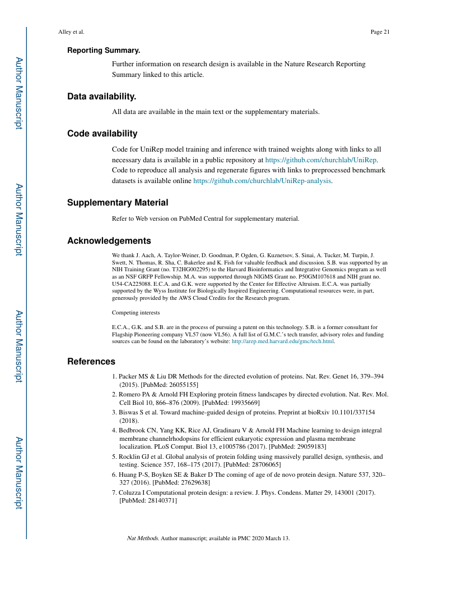
Alley et al. Page 21
Reporting Summary. Further information on research design is available in the Nature Research Reporting Summary linked to this article.
Data availability.
All data are available in the main text or the supplementary materials.
Code availability
Code for UniRep model training and inference with trained weights along with links to all necessary data is available in a public repository at https://github.com/churchlab/UniRep. Code to reproduce all analysis and regenerate figures with links to preprocessed benchmark datasets is available online https://github.com/churchlab/UniRep-analysis.
Supplementary Material
Refer to Web version on PubMed Central for supplementary material.
Acknowledgements
We thank J. Aach, A. Taylor-Weiner, D. Goodman, P. Ogden, G. Kuznetsov, S. Sinai, A. Tucker, M. Turpin, J. Swett, N. Thomas, R. Sha, C. Bakerlee and K. Fish for valuable feedback and discussion. S.B. was supported by an NIH Training Grant (no. T32HG002295) to the Harvard Bioinformatics and Integrative Genomics program as well as an NSF GRFP Fellowship. M.A. was supported through NIGMS Grant no. P50GM107618 and NIH grant no. U54-CA225088. E.C.A. and G.K. were supported by the Center for Effective Altruism. E.C.A. was partially supported by the Wyss Institute for Biologically Inspired Engineering. Computational resources were, in part, generously provided by the AWS Cloud Credits for the Research program. Competing interests E.C.A., G.K. and S.B. are in the process of pursuing a patent on this technology. S.B. is a former consultant for Flagship Pioneering company VL57 (now VL56). A full list of G.M.C.’s tech transfer, advisory roles and funding sources can be found on the laboratory’s website: http://arep.med.harvard.edu/gmc/tech.html. References 1. Packer MS & Liu DR Methods for the directed evolution of proteins. Nat. Rev. Genet 16, 379–394 (2015). [PubMed: 26055155] 2. Romero PA & Arnold FH Exploring protein fitness landscapes by directed evolution. Nat. Rev. Mol. Cell Biol 10, 866–876 (2009). [PubMed: 19935669] 3. Biswas S et al. Toward machine-guided design of proteins. Preprint at bioRxiv 10.1101/337154 (2018). 4. Bedbrook CN, Yang KK, Rice AJ, Gradinaru V & Arnold FH Machine learning to design integral membrane channelrhodopsins for efficient eukaryotic expression and plasma membrane localization. PLoS Comput. Biol 13, e1005786 (2017). [PubMed: 29059183] 5. Rocklin GJ et al. Global analysis of protein folding using massively parallel design, synthesis, and testing. Science 357, 168–175 (2017). [PubMed: 28706065] 6. Huang P-S, Boyken SE & Baker D The coming of age of de novo protein design. Nature 537, 320– 327 (2016). [PubMed: 27629638] 7. Coluzza I Computational protein design: a review. J. Phys. Condens. Matter 29, 143001 (2017). [PubMed: 28140371]
Nat Methods. Author manuscript; available in PMC 2020 March 13. Author Manuscript Author Manuscript Author Manuscript Author Manuscript
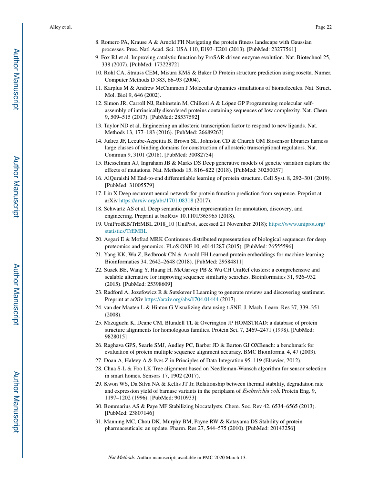
Alley et al. Page 22
8. Romero PA, Krause A & Arnold FH Navigating the protein fitness landscape with Gaussian processes. Proc. Natl Acad. Sci. USA 110, E193–E201 (2013). [PubMed: 23277561] 9. Fox RJ et al. Improving catalytic function by ProSAR-driven enzyme evolution. Nat. Biotechnol 25, 338 (2007). [PubMed: 17322872] 10. Rohl CA, Strauss CEM, Misura KMS & Baker D Protein structure prediction using rosetta. Numer. Computer Methods D 383, 66–93 (2004). 11. Karplus M & Andrew McCammon J Molecular dynamics simulations of biomolecules. Nat. Struct. Mol. Biol 9, 646 (2002). 12. Simon JR, Carroll NJ, Rubinstein M, Chilkoti A & López GP Programming molecular self- assembly of intrinsically disordered proteins containing sequences of low complexity. Nat. Chem 9, 509–515 (2017). [PubMed: 28537592] 13. Taylor ND et al. Engineering an allosteric transcription factor to respond to new ligands. Nat. Methods 13, 177–183 (2016). [PubMed: 26689263] 14. Juárez JF, Lecube-Azpeitia B, Brown SL, Johnston CD & Church GM Biosensor libraries harness large classes of binding domains for construction of allosteric transcriptional regulators. Nat. Commun 9, 3101 (2018). [PubMed: 30082754] 15. Riesselman AJ, Ingraham JB & Marks DS Deep generative models of genetic variation capture the effects of mutations. Nat. Methods 15, 816–822 (2018). [PubMed: 30250057] 16. AlQuraishi M End-to-end differentiable learning of protein structure. Cell Syst. 8, 292–301 (2019). [PubMed: 31005579] 17. Liu X Deep recurrent neural network for protein function prediction from sequence. Preprint at arXiv https://arxiv.org/abs/1701.08318 (2017). 18. Schwartz AS et al. Deep semantic protein representation for annotation, discovery, and engineering. Preprint at bioRxiv 10.1101/365965 (2018). 19. UniProtKB/TrEMBL 2018_10 (UniProt, accessed 21 November 2018); https://www.uniprot.org/ statistics/TrEMBL 20. Asgari E & Mofrad MRK Continuous distributed representation of biological sequences for deep proteomics and genomics. PLoS ONE 10, e0141287 (2015). [PubMed: 26555596] 21. Yang KK, Wu Z, Bedbrook CN & Arnold FH Learned protein embeddings for machine learning. Bioinformatics 34, 2642–2648 (2018). [PubMed: 29584811] 22. Suzek BE, Wang Y, Huang H, McGarvey PB & Wu CH UniRef clusters: a comprehensive and scalable alternative for improving sequence similarity searches. Bioinformatics 31, 926–932 (2015). [PubMed: 25398609] 23. Radford A, Jozefowicz R & Sutskever I Learning to generate reviews and discovering sentiment. Preprint at arXiv https://arxiv.org/abs/1704.01444 (2017). 24. van der Maaten L & Hinton G Visualizing data using t-SNE. J. Mach. Learn. Res 37, 339–351 (2008). 25. Mizuguchi K, Deane CM, Blundell TL & Overington JP HOMSTRAD: a database of protein structure alignments for homologous families. Protein Sci. 7, 2469–2471 (1998). [PubMed: 9828015] 26. Raghava GPS, Searle SMJ, Audley PC, Barber JD & Barton GJ OXBench: a benchmark for evaluation of protein multiple sequence alignment accuracy. BMC Bioinforma. 4, 47 (2003). 27. Doan A, Halevy A & Ives Z in Principles of Data Integration 95–119 (Elsevier, 2012). 28. Chua S-L & Foo LK Tree alignment based on Needleman-Wunsch algorithm for sensor selection in smart homes. Sensors 17, 1902 (2017). 29. Kwon WS, Da Silva NA & Kellis JT Jr. Relationship between thermal stability, degradation rate and expression yield of barnase variants in the periplasm of Escherichia coli. Protein Eng. 9, 1197–1202 (1996). [PubMed: 9010933] 30. Bommarius AS & Paye MF Stabilizing biocatalysts. Chem. Soc. Rev 42, 6534–6565 (2013). [PubMed: 23807146] 31. Manning MC, Chou DK, Murphy BM, Payne RW & Katayama DS Stability of protein pharmaceuticals: an update. Pharm. Res 27, 544–575 (2010). [PubMed: 20143256] Nat Methods. Author manuscript; available in PMC 2020 March 13. Author Manuscript Author Manuscript Author Manuscript Author Manuscript
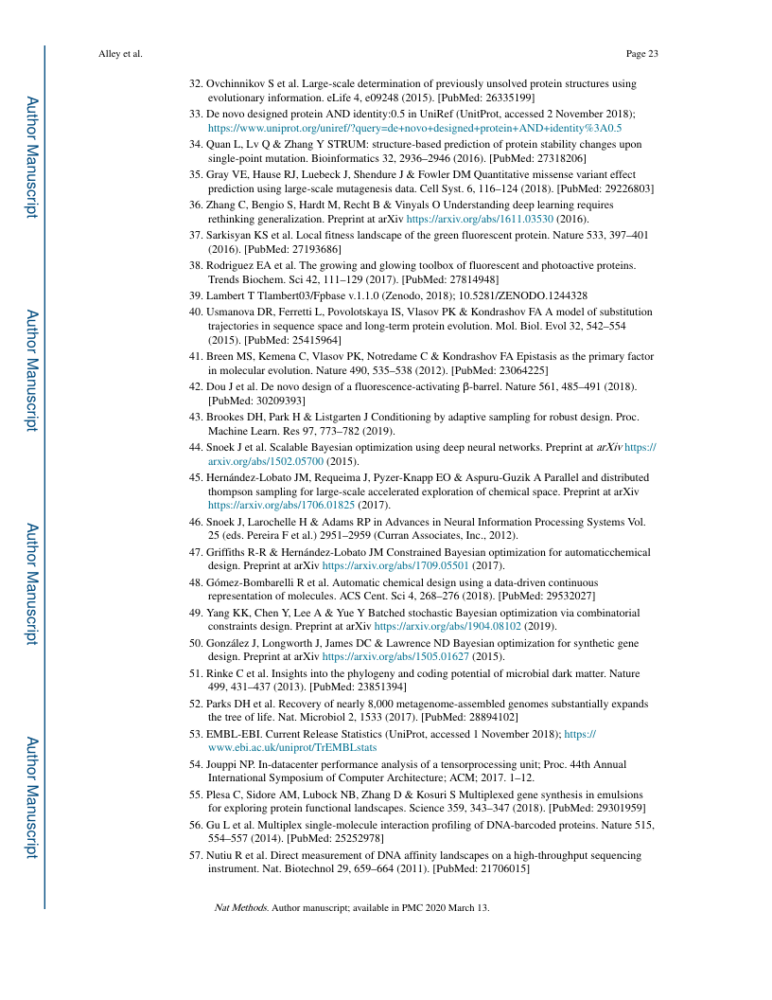
Alley et al. Page 23
32. Ovchinnikov S et al. Large-scale determination of previously unsolved protein structures using evolutionary information. eLife 4, e09248 (2015). [PubMed: 26335199] 33. De novo designed protein AND identity:0.5 in UniRef (UnitProt, accessed 2 November 2018); https://www.uniprot.org/uniref/?query=de+novo+designed+protein+AND+identity%3A0.5 34. Quan L, Lv Q & Zhang Y STRUM: structure-based prediction of protein stability changes upon single-point mutation. Bioinformatics 32, 2936–2946 (2016). [PubMed: 27318206] 35. Gray VE, Hause RJ, Luebeck J, Shendure J & Fowler DM Quantitative missense variant effect prediction using large-scale mutagenesis data. Cell Syst. 6, 116–124 (2018). [PubMed: 29226803] 36. Zhang C, Bengio S, Hardt M, Recht B & Vinyals O Understanding deep learning requires rethinking generalization. Preprint at arXiv https://arxiv.org/abs/1611.03530 (2016). 37. Sarkisyan KS et al. Local fitness landscape of the green fluorescent protein. Nature 533, 397–401 (2016). [PubMed: 27193686] 38. Rodriguez EA et al. The growing and glowing toolbox of fluorescent and photoactive proteins. Trends Biochem. Sci 42, 111–129 (2017). [PubMed: 27814948] 39. Lambert T Tlambert03/Fpbase v.1.1.0 (Zenodo, 2018); 10.5281/ZENODO.1244328 40. Usmanova DR, Ferretti L, Povolotskaya IS, Vlasov PK & Kondrashov FA A model of substitution trajectories in sequence space and long-term protein evolution. Mol. Biol. Evol 32, 542–554 (2015). [PubMed: 25415964] 41. Breen MS, Kemena C, Vlasov PK, Notredame C & Kondrashov FA Epistasis as the primary factor in molecular evolution. Nature 490, 535–538 (2012). [PubMed: 23064225] 42. Dou J et al. De novo design of a fluorescence-activating β-barrel. Nature 561, 485–491 (2018). [PubMed: 30209393] 43. Brookes DH, Park H & Listgarten J Conditioning by adaptive sampling for robust design. Proc. Machine Learn. Res 97, 773–782 (2019). 44. Snoek J et al. Scalable Bayesian optimization using deep neural networks. Preprint at arXiv https:// arxiv.org/abs/1502.05700 (2015). 45. Hernández-Lobato JM, Requeima J, Pyzer-Knapp EO & Aspuru-Guzik A Parallel and distributed thompson sampling for large-scale accelerated exploration of chemical space. Preprint at arXiv https://arxiv.org/abs/1706.01825 (2017). 46. Snoek J, Larochelle H & Adams RP in Advances in Neural Information Processing Systems Vol. 25 (eds. Pereira F et al.) 2951–2959 (Curran Associates, Inc., 2012). 47. Griffiths R-R & Hernández-Lobato JM Constrained Bayesian optimization for automaticchemical design. Preprint at arXiv https://arxiv.org/abs/1709.05501 (2017). 48. Gómez-Bombarelli R et al. Automatic chemical design using a data-driven continuous representation of molecules. ACS Cent. Sci 4, 268–276 (2018). [PubMed: 29532027] 49. Yang KK, Chen Y, Lee A & Yue Y Batched stochastic Bayesian optimization via combinatorial constraints design. Preprint at arXiv https://arxiv.org/abs/1904.08102 (2019). 50. González J, Longworth J, James DC & Lawrence ND Bayesian optimization for synthetic gene design. Preprint at arXiv https://arxiv.org/abs/1505.01627 (2015). 51. Rinke C et al. Insights into the phylogeny and coding potential of microbial dark matter. Nature 499, 431–437 (2013). [PubMed: 23851394] 52. Parks DH et al. Recovery of nearly 8,000 metagenome-assembled genomes substantially expands the tree of life. Nat. Microbiol 2, 1533 (2017). [PubMed: 28894102] 53. EMBL-EBI. Current Release Statistics (UniProt, accessed 1 November 2018); https:// www.ebi.ac.uk/uniprot/TrEMBLstats 54. Jouppi NP. In-datacenter performance analysis of a tensorprocessing unit; Proc. 44th Annual International Symposium of Computer Architecture; ACM; 2017. 1–12. 55. Plesa C, Sidore AM, Lubock NB, Zhang D & Kosuri S Multiplexed gene synthesis in emulsions for exploring protein functional landscapes. Science 359, 343–347 (2018). [PubMed: 29301959] 56. Gu L et al. Multiplex single-molecule interaction profiling of DNA-barcoded proteins. Nature 515, 554–557 (2014). [PubMed: 25252978] 57. Nutiu R et al. Direct measurement of DNA affinity landscapes on a high-throughput sequencing instrument. Nat. Biotechnol 29, 659–664 (2011). [PubMed: 21706015] Nat Methods. Author manuscript; available in PMC 2020 March 13. Author Manuscript Author Manuscript Author Manuscript Author Manuscript
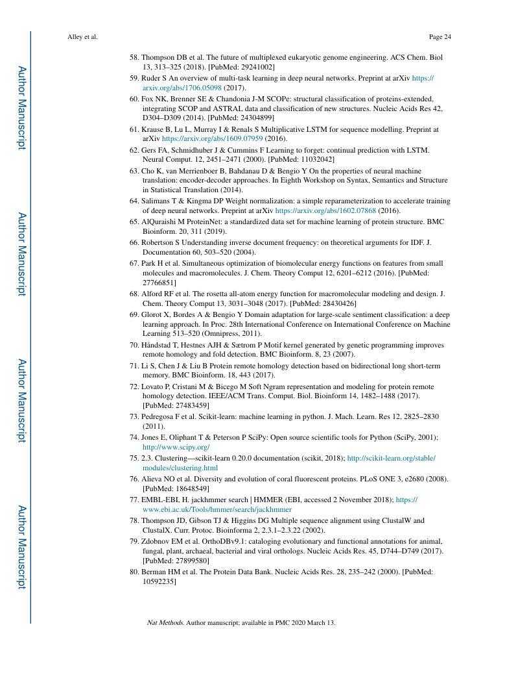
Alley et al. Page 24
58. Thompson DB et al. The future of multiplexed eukaryotic genome engineering. ACS Chem. Biol 13, 313–325 (2018). [PubMed: 29241002] 59. Ruder S An overview of multi-task learning in deep neural networks. Preprint at arXiv https:// arxiv.org/abs/1706.05098 (2017). 60. Fox NK, Brenner SE & Chandonia J-M SCOPe: structural classification of proteins-extended, integrating SCOP and ASTRAL data and classification of new structures. Nucleic Acids Res 42, D304–D309 (2014). [PubMed: 24304899] 61. Krause B, Lu L, Murray I & Renals S Multiplicative LSTM for sequence modelling. Preprint at arXiv https://arxiv.org/abs/1609.07959 (2016). 62. Gers FA, Schmidhuber J & Cummins F Learning to forget: continual prediction with LSTM. Neural Comput. 12, 2451–2471 (2000). [PubMed: 11032042] 63. Cho K, van Merrienboer B, Bahdanau D & Bengio Y On the properties of neural machine translation: encoder-decoder approaches. In Eighth Workshop on Syntax, Semantics and Structure in Statistical Translation (2014). 64. Salimans T & Kingma DP Weight normalization: a simple reparameterization to accelerate training of deep neural networks. Preprint at arXiv https://arxiv.org/abs/1602.07868 (2016). 65. AlQuraishi M ProteinNet: a standardized data set for machine learning of protein structure. BMC Bioinform. 20, 311 (2019). 66. Robertson S Understanding inverse document frequency: on theoretical arguments for IDF. J. Documentation 60, 503–520 (2004). 67. Park H et al. Simultaneous optimization of biomolecular energy functions on features from small molecules and macromolecules. J. Chem. Theory Comput 12, 6201–6212 (2016). [PubMed: 27766851] 68. Alford RF et al. The rosetta all-atom energy function for macromolecular modeling and design. J. Chem. Theory Comput 13, 3031–3048 (2017). [PubMed: 28430426] 69. Glorot X, Bordes A & Bengio Y Domain adaptation for large-scale sentiment classification: a deep learning approach. In Proc. 28th International Conference on International Conference on Machine Learning 513–520 (Omnipress, 2011). 70. Håndstad T, Hestnes AJH & Sætrom P Motif kernel generated by genetic programming improves remote homology and fold detection. BMC Bioinform. 8, 23 (2007). 71. Li S, Chen J & Liu B Protein remote homology detection based on bidirectional long short-term memory. BMC Bioinform. 18, 443 (2017). 72. Lovato P, Cristani M & Bicego M Soft Ngram representation and modeling for protein remote homology detection. IEEE/ACM Trans. Comput. Biol. Bioinform 14, 1482–1488 (2017). [PubMed: 27483459] 73. Pedregosa F et al. Scikit-learn: machine learning in python. J. Mach. Learn. Res 12, 2825–2830 (2011). 74. Jones E, Oliphant T & Peterson P SciPy: Open source scientific tools for Python (SciPy, 2001); http://www.scipy.org/ 75. 2.3. Clustering—scikit-learn 0.20.0 documentation (scikit, 2018); http://scikit-learn.org/stable/ modules/clustering.html 76. Alieva NO et al. Diversity and evolution of coral fluorescent proteins. PLoS ONE 3, e2680 (2008). [PubMed: 18648549] 77. EMBL-EBI, H. jackhmmer search | HMMER (EBI, accessed 2 November 2018); https:// www.ebi.ac.uk/Tools/hmmer/search/jackhmmer 78. Thompson JD, Gibson TJ & Higgins DG Multiple sequence alignment using ClustalW and ClustalX. Curr. Protoc. Bioinforma 2, 2.3.1–2.3.22 (2002). 79. Zdobnov EM et al. OrthoDBv9.1: cataloging evolutionary and functional annotations for animal, fungal, plant, archaeal, bacterial and viral orthologs. Nucleic Acids Res. 45, D744–D749 (2017). [PubMed: 27899580] 80. Berman HM et al. The Protein Data Bank. Nucleic Acids Res. 28, 235–242 (2000). [PubMed: 10592235] Nat Methods. Author manuscript; available in PMC 2020 March 13. Author Manuscript Author Manuscript Author Manuscript Author Manuscript
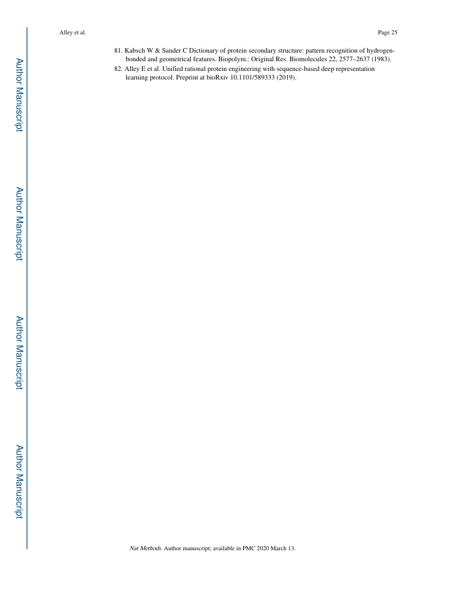
Alley et al. Page 25
81. Kabsch W & Sander C Dictionary of protein secondary structure: pattern recognition of hydrogen- bonded and geometrical features. Biopolym.: Original Res. Biomolecules 22, 2577–2637 (1983). 82. Alley E et al. Unified rational protein engineering with sequence-based deep representation learning protocol. Preprint at bioRxiv 10.1101/589333 (2019).
Nat Methods. Author manuscript; available in PMC 2020 March 13. Author Manuscript Author Manuscript Author Manuscript Author Manuscript
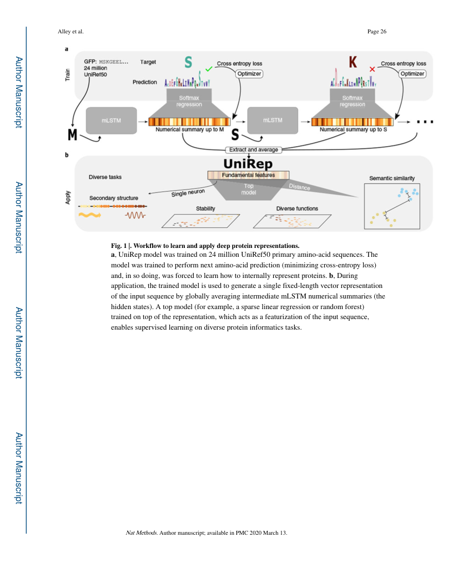
Alley et al. Page 26
Fig. 1 |. Workflow to learn and apply deep protein representations. a, UniRep model was trained on 24 million UniRef50 primary amino-acid sequences. The model was trained to perform next amino-acid prediction (minimizing cross-entropy loss) and, in so doing, was forced to learn how to internally represent proteins. b, During application, the trained model is used to generate a single fixed-length vector representation of the input sequence by globally averaging intermediate mLSTM numerical summaries (the hidden states). A top model (for example, a sparse linear regression or random forest)
trained on top of the representation, which acts as a featurization of the input sequence, enables supervised learning on diverse protein informatics tasks.
Nat Methods. Author manuscript; available in PMC 2020 March 13. Author Manuscript Author Manuscript Author Manuscript Author Manuscript
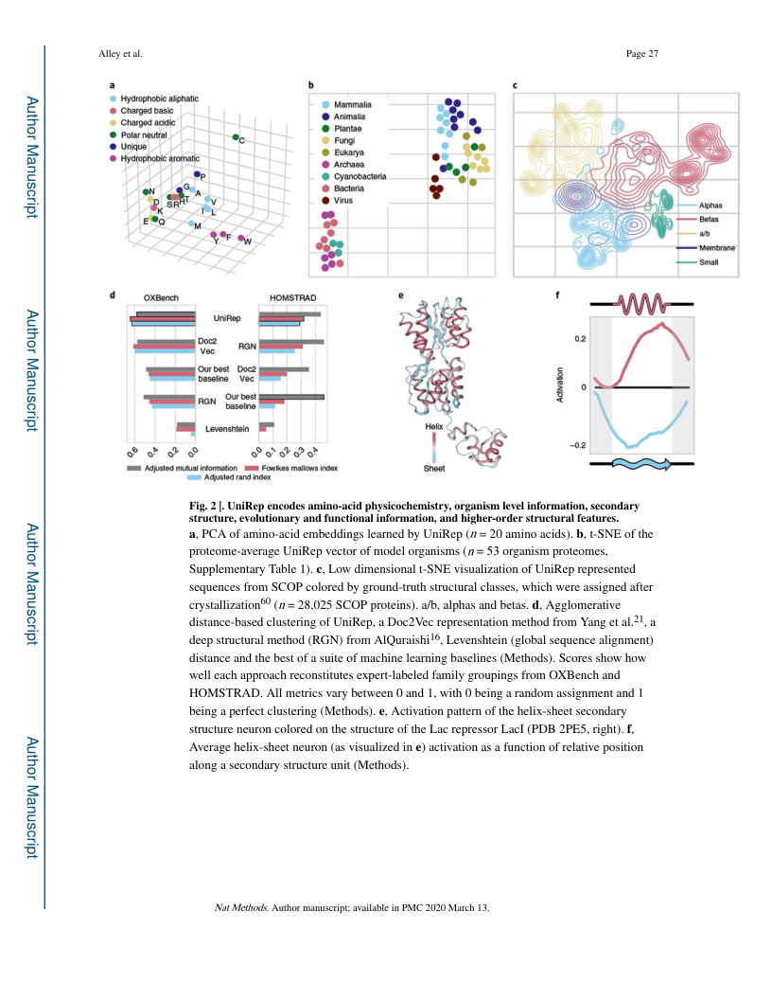
Alley et al. Page 27
Fig. 2 |. UniRep encodes amino-acid physicochemistry, organism level information, secondary structure, evolutionary and functional information, and higher-order structural features. a, PCA of amino-acid embeddings learned by UniRep (n = 20 amino acids). b, t-SNE of the proteome-average UniRep vector of model organisms (n = 53 organism proteomes, Supplementary Table 1). c, Low dimensional t-SNE visualization of UniRep represented sequences from SCOP colored by ground-truth structural classes, which were assigned after crystallization60 (n = 28,025 SCOP proteins). a/b, alphas and betas. d, Agglomerative
distance-based clustering of UniRep, a Doc2Vec representation method from Yang et al.21, a deep structural method (RGN) from AlQuraishi16, Levenshtein (global sequence alignment) distance and the best of a suite of machine learning baselines (Methods). Scores show how well each approach reconstitutes expert-labeled family groupings from OXBench and HOMSTRAD. All metrics vary between 0 and 1, with 0 being a random assignment and 1 being a perfect clustering (Methods). e, Activation pattern of the helix-sheet secondary structure neuron colored on the structure of the Lac repressor LacI (PDB 2PE5, right). f, Average helix-sheet neuron (as visualized in e) activation as a function of relative position along a secondary structure unit (Methods).
Nat Methods. Author manuscript; available in PMC 2020 March 13. Author Manuscript Author Manuscript Author Manuscript Author Manuscript
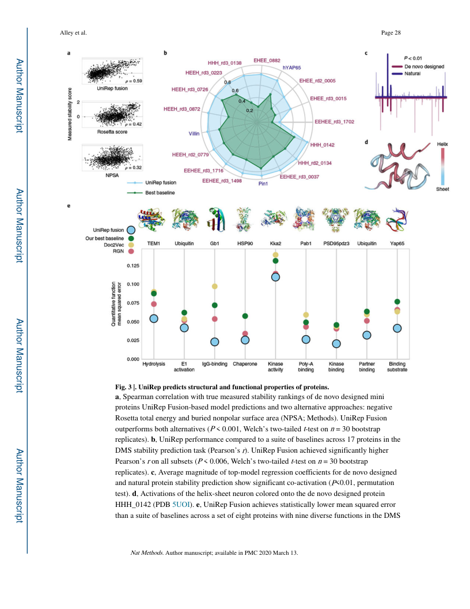
Alley et al. Page 28
Fig. 3 |. UniRep predicts structural and functional properties of proteins. a, Spearman correlation with true measured stability rankings of de novo designed mini proteins UniRep Fusion-based model predictions and two alternative approaches: negative Rosetta total energy and buried nonpolar surface area (NPSA; Methods). UniRep Fusion
outperforms both alternatives (P < 0.001, Welch’s two-tailed t-test on n = 30 bootstrap replicates). b, UniRep performance compared to a suite of baselines across 17 proteins in the DMS stability prediction task (Pearson’s r). UniRep Fusion achieved significantly higher Pearson’s r on all subsets (P < 0.006, Welch’s two-tailed t-test on n = 30 bootstrap replicates). c, Average magnitude of top-model regression coefficients for de novo designed and natural protein stability prediction show significant co-activation (P<0.01, permutation test). d, Activations of the helix-sheet neuron colored onto the de novo designed protein HHH_0142 (PDB 5UOI). e, UniRep Fusion achieves statistically lower mean squared error than a suite of baselines across a set of eight proteins with nine diverse functions in the DMS
Nat Methods. Author manuscript; available in PMC 2020 March 13. Author Manuscript Author Manuscript Author Manuscript Author Manuscript
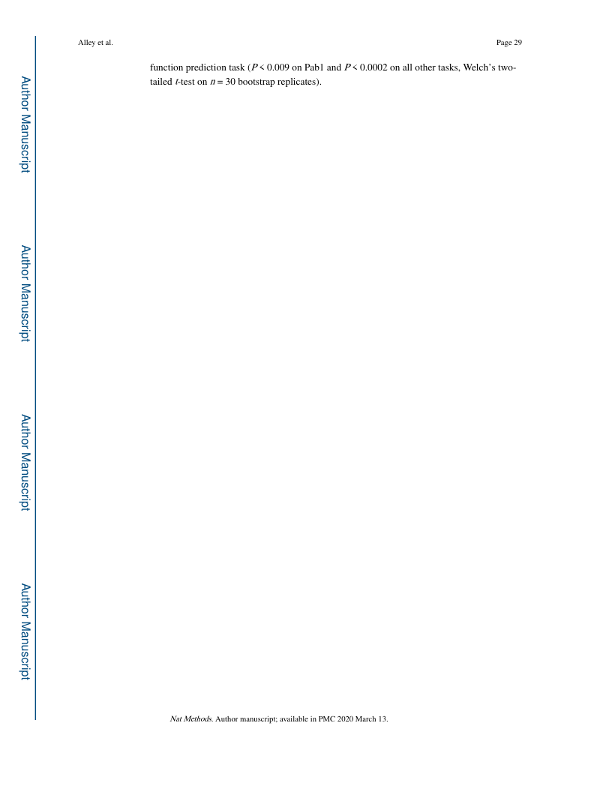
Alley et al. Page 29
function prediction task (P < 0.009 on Pab1 and P < 0.0002 on all other tasks, Welch’s two- tailed t-test on n = 30 bootstrap replicates).
Nat Methods. Author manuscript; available in PMC 2020 March 13. Author Manuscript Author Manuscript Author Manuscript Author Manuscript
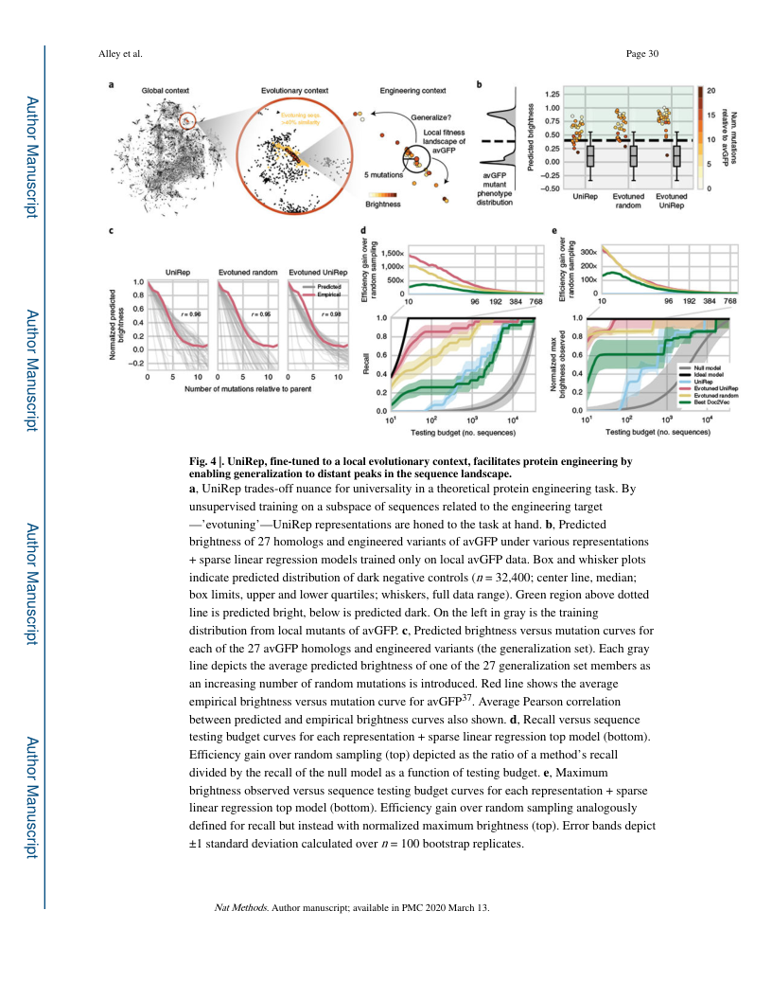
Alley et al. Page 30
Fig. 4 |. UniRep, fine-tuned to a local evolutionary context, facilitates protein engineering by enabling generalization to distant peaks in the sequence landscape. a, UniRep trades-off nuance for universality in a theoretical protein engineering task. By unsupervised training on a subspace of sequences related to the engineering target —’evotuning’—UniRep representations are honed to the task at hand. b, Predicted brightness of 27 homologs and engineered variants of avGFP under various representations + sparse linear regression models trained only on local avGFP data. Box and whisker plots indicate predicted distribution of dark negative controls (n = 32,400; center line, median; box limits, upper and lower quartiles; whiskers, full data range). Green region above dotted line is predicted bright, below is predicted dark. On the left in gray is the training distribution from local mutants of avGFP. c, Predicted brightness versus mutation curves for each of the 27 avGFP homologs and engineered variants (the generalization set). Each gray line depicts the average predicted brightness of one of the 27 generalization set members as an increasing number of random mutations is introduced. Red line shows the average empirical brightness versus mutation curve for avGFP37. Average Pearson correlation between predicted and empirical brightness curves also shown. d, Recall versus sequence
testing budget curves for each representation + sparse linear regression top model (bottom). Efficiency gain over random sampling (top) depicted as the ratio of a method’s recall divided by the recall of the null model as a function of testing budget. e, Maximum brightness observed versus sequence testing budget curves for each representation + sparse linear regression top model (bottom). Efficiency gain over random sampling analogously defined for recall but instead with normalized maximum brightness (top). Error bands depict ±1 standard deviation calculated over n = 100 bootstrap replicates.
Nat Methods. Author manuscript; available in PMC 2020 March 13. Author Manuscript Author Manuscript Author Manuscript Author Manuscript